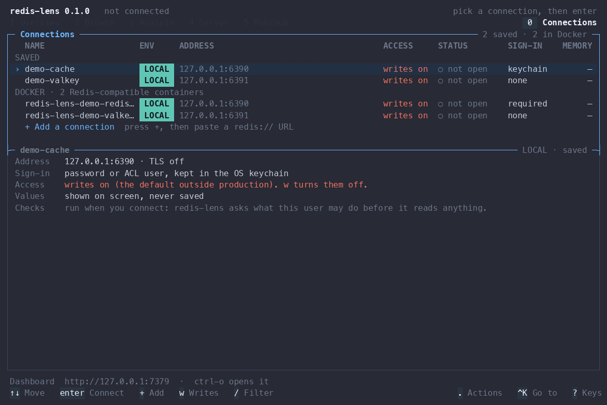
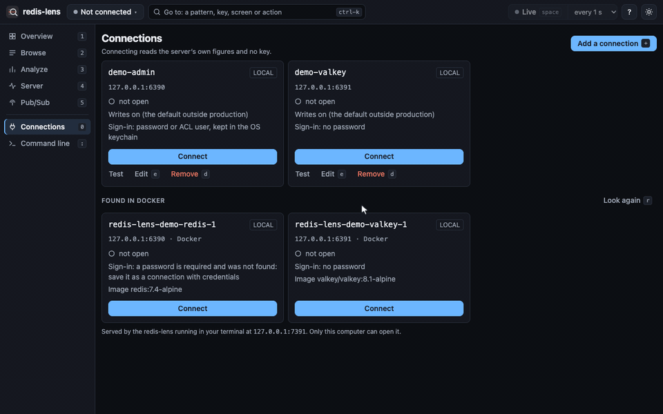
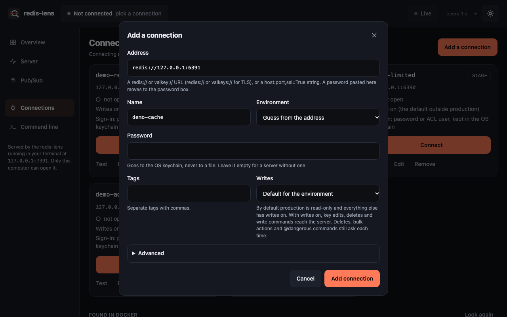
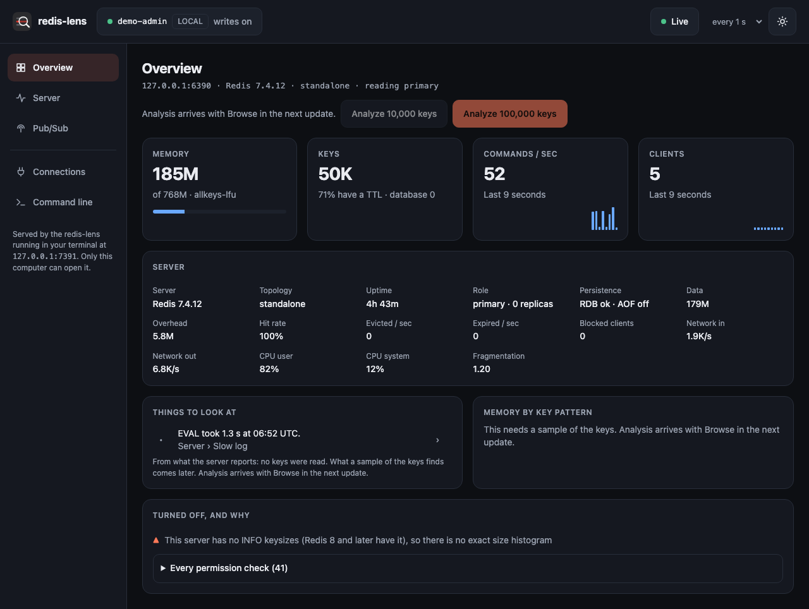
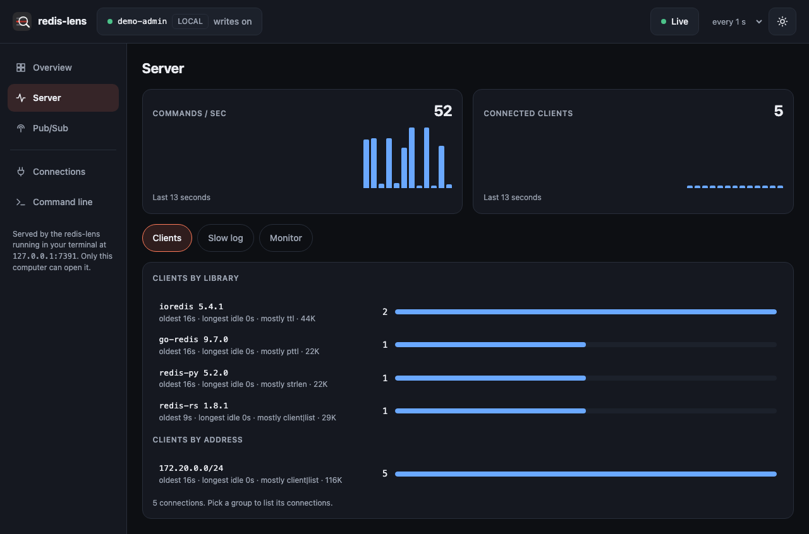
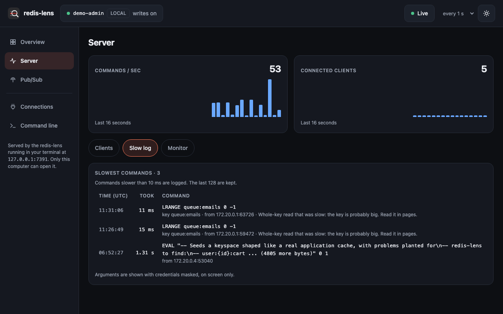
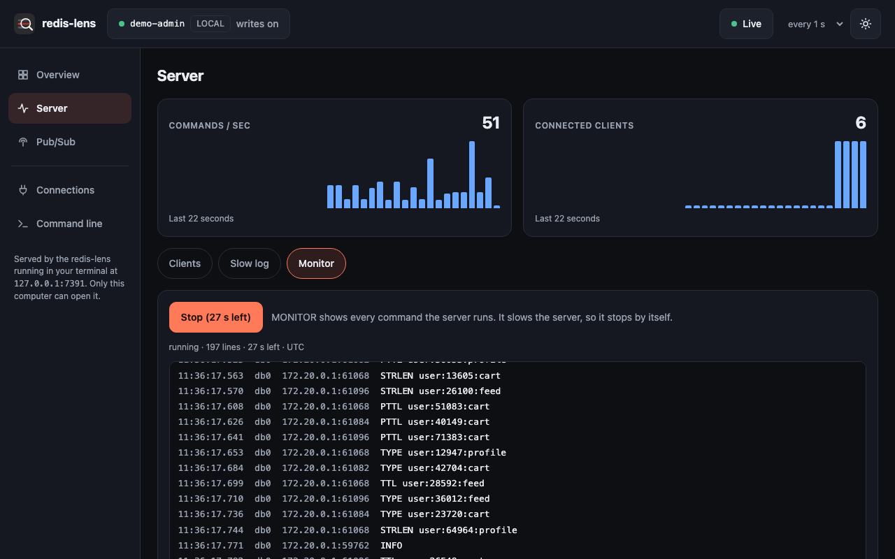
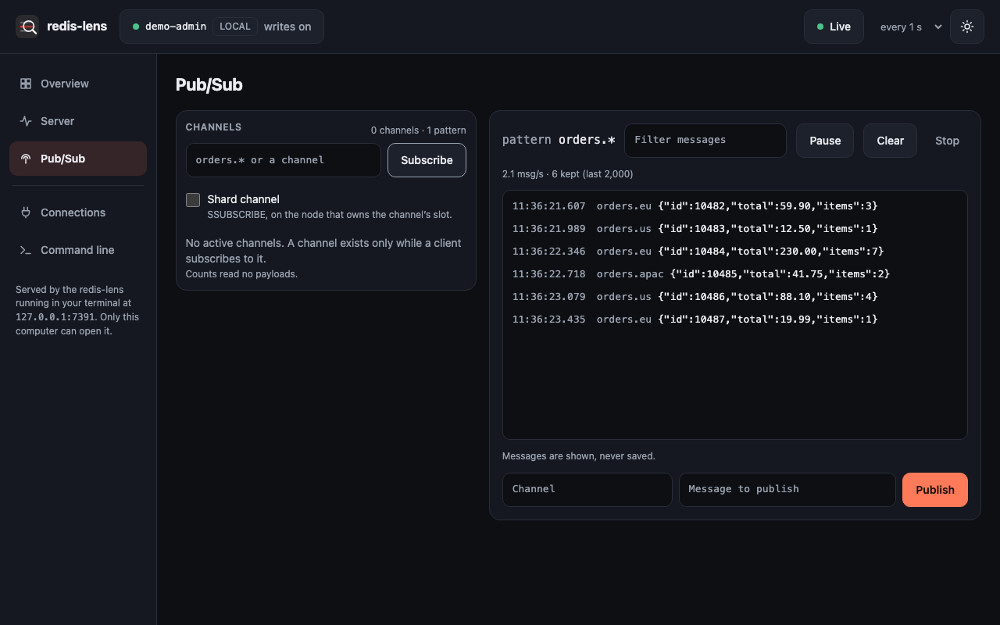
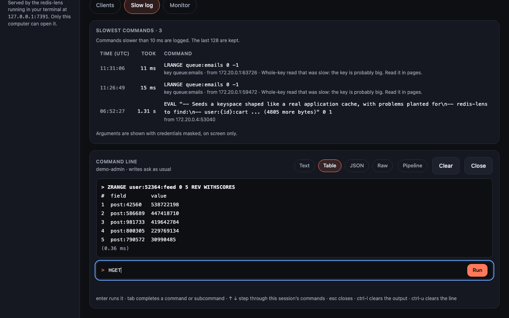
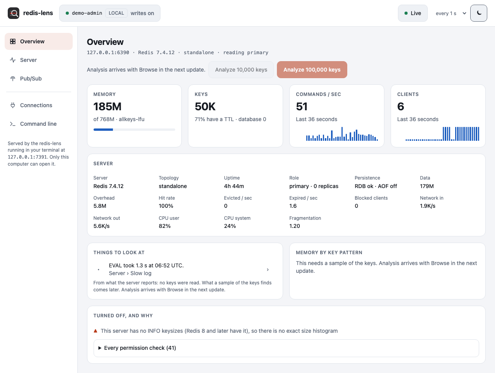

redis-lens
redis-lens lists your keys and shows their values, finds the keys and key patterns that use the most memory, and shows live server stats, connected clients, the slow log and Pub/Sub messages. You can also run commands and edit keys from it.
To see what uses the memory, press r. redis-lens samples the keys with SCAN, groups them into patterns such as user:{id}:cart, and lists each pattern's key count, memory, average size and how many keys have no TTL. A pattern that looks wrong, such as keys that never expire or one very large list, is marked ▲ with the reason.
redis-lens runs in the terminal, and the same program serves a web dashboard on 127.0.0.1. The dashboard has five screens so far: Connections, Overview, Server (clients, the slow log, MONITOR), Pub/Sub and a command line. It follows the same rules as the terminal. Browsing keys, the analysis, edits, streams and Search are still terminal-only; see Not in the dashboard yet.
To find a key, press ctrl-f on any screen and type part of its name or a pattern. Other screens show the server (stats, clients, the slow log, MONITOR), streams and consumer groups, Pub/Sub, Search indexes, and a : command line. Snapshots, diffs, trends and --check rules run the same analysis from cron or CI.
Why it is safe on production
- It reads nothing on connect. Connecting reads the server's own figures (
INFO,DBSIZE,MEMORY STATS) and no key. Keys are sampled only when you press r. SCAN, neverKEYS, with per-key commands pipelined in batches, under a command budget that every view shares (5,000 commands a second by default).- Production profiles are read-only. A write is sent only when the server's ACL, the profile and a confirmation all allow it, through one write gate in the code.
- Credentials live in the OS keychain, never in the config file, logs, error messages, snapshots or on screen.
- A missing permission turns one feature off and says why. It never aborts a scan.

make demo. Every screen below is drawn from the app's own snapshot tests.
make demo. The screenshots below are from the same run.brew install magna-nz/tap/redis-lensOr cargo install redis-lens, an installer script, or a binary from GitHub Releases. See Install.
# the dashboard only; opens your browser, signed in
redis-lens --dashboard
# or the terminal UI, then ctrl-o to open the dashboard
redis-lens# save a connection; the password goes to the OS keychain
redis-lens conn add staging \
--url redis://lens-ro@staging.internal:6379 \
--env stage --ask-password
# open the TUI: pick it, enter, then r to analyze
redis-lensPATTERN KEYS MEMORY NO TTL
session:{uuid} 1.84M 6.1G 0%
cache:search:{hash} 1.12M 2.2G 12% ▲
user:{id}:cart 388K 1.2G 31% ▲
tmp:import:{ulid} 48K 737M 100% ▲
queue:emails 1 612M 100% ▲Install #
One binary. No server-side component, no daemon, no telemetry.
Homebrew
On macOS and Linux: brew install magna-nz/tap/redis-lens. Run brew update before brew upgrade redis-lens to pick up a release that just came out.
Installer scripts
The shell installer (macOS, Linux) and the PowerShell installer (Windows) download the binary for your platform from the latest release and put it in $CARGO_HOME/bin (~/.cargo/bin by default).
With cargo
cargo install redis-lens --locked builds it from crates.io. It needs Rust 1.89 or newer. Microsoft Entra ID sign-in is behind a cargo feature, so install with --features entra-id if you use Azure Cache for Redis or Azure Managed Redis with Entra ID.
Release binaries
Each vX.Y.Z tag builds binaries for five targets and attaches them to a GitHub Release, with a SHA-256 checksum next to each archive:
| Platform | Target | Archive |
|---|---|---|
| Linux x86_64 | x86_64-unknown-linux-gnu | .tar.xz |
| Linux aarch64 | aarch64-unknown-linux-gnu | .tar.xz |
| macOS Intel | x86_64-apple-darwin | .tar.xz |
| macOS Apple silicon | aarch64-apple-darwin | .tar.xz |
| Windows x86_64 | x86_64-pc-windows-msvc | .zip |
From source
Clone the repository and run make build (cargo build --release --locked). The binary is target/release/redis-lens.
On macOS, a keychain entry is tied to the binary that wrote it. After an upgrade or a rebuild, macOS asks once whether redis-lens may use it. Choose Always Allow. Until you answer, connecting waits; after two seconds the TUI tells you it is waiting on the keychain.
brew install magna-nz/tap/redis-lenscurl --proto '=https' --tlsv1.2 -LsSf https://github.com/magna-nz/redis-lens/releases/latest/download/redis-lens-installer.sh | shpowershell -ExecutionPolicy Bypass -c "irm https://github.com/magna-nz/redis-lens/releases/latest/download/redis-lens-installer.ps1 | iex"cargo install redis-lens --locked
# with Microsoft Entra ID sign-in
cargo install redis-lens --locked --features entra-idgit clone https://github.com/magna-nz/redis-lens
cd redis-lens
make build # cargo build --release --locked
./target/release/redis-lens --versionQuickstart #
Save a connection, open the TUI, analyze.
Start the dashboard, add or pick a connection, connect.
1. Save a connection
conn add saves a profile. The URL takes redis://, rediss:// for TLS, or a StackExchange.Redis string. --ask-password prompts without echoing; --password-stdin reads it from a pipe. Either way the password goes to the OS keychain, and the config file only holds the name, address, TLS setting and environment.
--env is prod, stage, local or other, guessed from the host when you leave it out. A prod profile is read-only unless you turn writes on.
redis-lens conn add prod-cache \
--url rediss://lens-ro@prod-cache.internal:6380 \
--env prod --ask-password
redis-lens conn test prod-cache # connect and run the permission check2. Or find a container
redis-lens discover lists running Docker containers that look like Redis or Valkey. The TUI's Connections screen shows them too, beside your saved profiles, without saving anything.
redis-lens discover3. Open the TUI and analyze
Run redis-lens with no arguments. Pick a connection and press enter: you land on 1 Overview with the server's live figures and what the server says on its own, with no key read. Press r and choose Quick (10,000 keys) or Deep (100,000 keys). The dialog shows how many commands each sends and how long it takes at the profile's budget. esc stops an analysis and keeps what it has.
Then 2 browses the patterns, 3 shows Big keys, Expiry, Changes and Hot keys, and ? lists every key and finds any action.
redis-lens
# enter connects, r analyzes, ? shows every key, q quits
# or without the TUI
redis-lens scan prod-cache --sample 200003. Open the dashboard
redis-lens --dashboard serves the dashboard alone. It prints Dashboard: and a sign-in link, opens your browser on it (not with --no-open), and runs until ctrl-c.
Plain redis-lens starts the TUI and serves the dashboard beside it on 127.0.0.1:7379. The Connections screen shows the address; ctrl-o opens it in your browser, signed in. Quitting the TUI stops the dashboard.
In the page, Connections lists the saved connections and the containers found in Docker. Add a connection saves a new one, with the password going to the OS keychain. Connect reads the server's own figures, no key, and opens the Overview. Server, Pub/Sub and Command line are in the side bar.
redis-lens --dashboard # the dashboard only
redis-lens --dashboard --no-open # print the link, open no browser
redis-lens --dashboard --port 8080
redis-lens # the TUI; ctrl-o opens the dashboard
redis-lens --terminal # the TUI, no dashboardTry the demo in 30 seconds
You need Docker and a Rust toolchain. From a clone of the repository, make demo starts a Redis 7.4 on port 6390 (ACL users lens and lens-limited, from demo/users.acl) and a Valkey 8.1 on port 6391 (no auth), both with an LFU eviction policy so hot keys show up.
It seeds them with a keyspace that has planted problems: about 31% of user:{id}:cart never expire, the biggest cache:search:{hash} results never expire, a tmp:import:{ulid} job that never cleans up, one very large queue:emails list, and a hot feature:checkout-v2 key. It saves three connections (demo-redis, demo-redis-limited, demo-valkey), puts the demo passwords in your keychain, and opens the TUI.
The TUI that make demo opens also serves the dashboard: press ctrl-o.
demo-redis-limited can only run SCAN, TYPE, TTL and PTTL, so it shows how redis-lens degrades without MEMORY USAGE. make demo-down stops the servers and deletes the data.
make demo # start, seed, save the connections, open the TUI
make demo-up # start and seed only
make demo-down # stop the demo and delete its dataThe TUI #
A home screen and five areas, switched with 0 to 5.
0 Connections is the home screen. Once connected: 1 Overview, 2 Browse (Keys · Streams · Search), 3 Analyze (Big keys · Expiry · Changes · Hot keys, plus Nodes · Slots on a cluster), 4 Server (Clients · Slow log · Monitor) and 5 Pub/Sub. tab and shift-tab switch panels and do nothing else; → and ← go deeper and back. Every screen below is the app's own rendering, taken from its insta snapshot tests, with colour added.
Screen layout
From the top: the header (profile, environment badge, write state, memory, keys, and the status at the right: ● connected, ⠋ analyzing 41%, ● analyzed 14:02 UTC), the tab row, the sub-tab row on areas with panels, the body and the footer, which shows the 3 to 5 keys that matter on that screen and : Command ? Help at the right.
- The body is one frame: a list on the left and the selected row's details on the right, or, where the list needs the full width (Connections, Nodes, Clients, Slow log, Monitor, Slots), the details below it.
- v shows more columns and details, or fewer again. Narrow terminals never wrap: names are shortened with
…and optional columns hide first. 80×24 and 120×36 both work. - Every state keeps a word or a glyph (
✓▲✗●○), never colour alone, so a light theme andNO_COLORstill read. - Times are UTC. The write state reads
read-only(amber),writes on(red), or a redWRITES ONbadge on aprodprofile with writes on.
0 Connections
Saved profiles and the Redis or Valkey containers found in Docker, in one frame: the list on top, the selected entry's details below. Each row shows the name, environment badge, address, access (read-only or writes on) and status (○ not open, ● connecting…, ● connected, ▲ limited, ✗ failed). From 100 cells wide, SIGN-IN and MEMORY join them.
The details say what the entry means in words: the address with TLS, the database and, once connected, the server, version and topology; where the password lives; why writes are on or off; tags or Sentinel; and the permission check in one sentence (v lists each check).
- enter connects and lands on Overview. a adds a connection by pasting a connection string; the parsed result is previewed with the password masked before anything is saved (enter saves, esc cancels, ctrl-u clears the field).
- w turns writes on or off for the selected profile and saves it to the config file. Turning writes on asks first: on
prodyou type the profile name. - / filters by name or tag; r looks for Docker containers again.
redis-lens 0.1.0 not connected pick a connection, then enter 0 Connections │ 1 Overview 2 Browse 3 Analyze 4 Server 5 Pub/Sub ┌─ Connections ──────────────────────────────────────── 3 saved · 1 in Docker ─┐ │ NAME ENV ADDRESS ACCESS STATUS │ │ SAVED │ │ prod-cache-01 PROD prod-cache-01.internal:6380 read-only ○ not open │ │ staging-cache STAGE staging-cache.internal:6379 writes on ○ not open │ │ local-6379 LOCAL localhost:6379 writes on ○ not open │ │ DOCKER · 1 Redis-compatible container │ │ myapp-redis-1 LOCAL 127.0.0.1:6390 writes on ○ not open │ │ + Add a connection press a, then paste a redis:// URL │ │ │ ├─ prod-cache-01 ─────────────────────────────────────────────── PROD · saved ─┤ │ Address prod-cache-01.internal:6380 · TLS on │ │ Sign-in password or ACL user, kept in the OS keychain │ │ Access read-only, the default for production. w turns writes on. │ │ Values shown on screen, never saved │ │ Checks run when you connect: redis-lens asks what this user may do before │ │ it reads anything. │ │ │ │ │ │ │ └──────────────────────────────────────────────────────────────────────────────┘ ↑↓ Move enter Connect a Add w Writes / Filter ? Help
prod-cache-01 is read-only because it is a production profile.1 Overview
The first screen after a connect, in two sections. Now polls INFO every 2 s while it is on screen: ops/s, clients, memory (of the limit), hit rate, evicted/s and expired/s, each with a sparkline, and a line with the version, uptime, role, persistence and maxmemory-policy. p pauses it and + - step the interval from 1 to 60 s.
Keys starts with what the server says on its own, before any key is read: big keys counted by INFO keysizes (Redis 8), the slowest slow-log entry (by command name and duration only), and many idle connections from one address. Each finding has a WHERE column; enter goes there. After an analysis it shows THINGS TO LOOK AT, WHERE THE MEMORY IS, and from 100 columns a FREED BY TTL line.
prod-cache-01 PROD read-only 15G / 24G · 7.92M keys ● connected 0 Connections │ 1 Overview 2 Browse 3 Analyze 4 Server 5 Pub/Sub ┌─ Now ──────────────────────────────────────────── INFO every 2 s · p pauses ─┐ │ ops/s 100 · clients 10 │ │ memory 982K of 3.8M hit rate 90% · │ │ evicted 0.5/s · expired 5.0/s · │ │ Redis 7.4.2 · up 16m 46s · primary, 1 replica · RDB ok · AOF off · allkeys-l…│ ├─ Keys ───────────────────── from INFO, MEMORY STATS, SLOWLOG · no keys read ─┤ │ 7.92M keys · 15G used │ │ │ │ FROM THE SERVER no keys read WHERE │ │ Nothing stands out in what the server reports. │ │ │ │ WHAT USES THE MEMORY needs a sample of the keys │ │ r Analyze: 10,000 keys, about 40K read-only commands, about 8 s. │ │ │ │ │ │ │ │ │ │ │ │ │ │ │ └──────────────────────────────────────────────────────────────────────────────┘ r Analyze keys ↑↓ Move enter Go there v More ctrl-f Find key ? Help
r line gives the analysis's cost before you start it.prod-cache-01 PROD read-only 15G / 24G · 7.92M keys ● connected 0 Connections │ 1 Overview 2 Browse 3 Analyze 4 Server 5 Pub/Sub ┌─ Now ──────────────────────────────────────────── INFO every 2 s · p pauses ─┐ │ ops/s 100 · clients 10 │ │ memory 982K of 3.8M hit rate 90% · │ │ evicted 0.5/s · expired 5.0/s · │ │ Re┌─ Analyze the keys? ─────────────────────────── prod-cache-01 · PROD ─┐-l…│ ├─ K│ Sampling reads a few commands per key; nothing is written. │d ─┤ │ 7.│ │ │ │ │ › Quick 10,000 keys about 40K commands about 8 s │ │ │ FR│ Deep 100,000 keys about 400K commands about 80 s │ │ │ › │ │ │ │ │ Deep finds rare patterns and rare big keys. Both stay under this │ │ │ │ profile's limit of 5,000 commands/s, and esc stops either one and │ │ │ │ keeps what it has. │ │ │ WH│ │ │ │ │ enter Start ↑↓ Pick esc Cancel │ │ │ └──────────────────────────────────────────────────────────────────────┘ │ │ │ │ │ │ │ │ │ └──────────────────────────────────────────────────────────────────────────────┘ A question is open: answer it, or esc to cancel.
prod-cache-01 PROD read-only 15G / 24G · 7.92M keys ⠇ analyzing 41% 0 Connections │ 1 Overview 2 Browse 3 Analyze 4 Server 5 Pub/Sub ┌─ Now ──────────────────────────────────────────── INFO every 2 s · p pauses ─┐ │ ops/s 100 · clients 10 │ │ memory 982K of 3.8M hit rate 90% · │ │ evicted 0.5/s · expired 5.0/s · │ │ Redis 7.4.2 · up 16m 46s · primary, 1 replica · RDB ok · AOF off · allkeys-l…│ ├─ Keys ─────────────────────────────────────────── about 40K commands in all ─┤ │ 7.92M keys · 31% have a TTL · 13G of data, 2.1G overhead │ │ │ │ ANALYZING sampling 4,100 of 10,000 keys ░░░░░░░░░░ about 5 s left │ │ TYPE, PTTL, MEMORY USAGE and OBJECT FREQ for each sampled key, at most 5,000…│ │ Browse and Analyze fill in as it goes. esc stops it and keeps what it has. │ │ │ │ FROM THE SERVER WHERE │ │ › ▲ 3 big keys, counted by the server (INFO keysizes). Big keys │ │ ▲ KEYS took 812 ms at 14:01 UTC. Slow log │ │ ● 212 connections from 10.0.9.17 idle for over an hour. Clients │ │ │ │ │ │ │ │ │ └──────────────────────────────────────────────────────────────────────────────┘ esc Stop p Pause +- Interval ctrl-f Find key : Command ? Help
prod-cache-01 PROD read-only 15G / 24G · 7.92M keys ● analyzed 14:02 0 Connections │ 1 Overview 2 Browse 3 Analyze 4 Server 5 Pub/Sub ┌─ Now ──────────────────────────────────────────── INFO every 2 s · p pauses ─┐ │ ops/s 100 · clients 10 │ │ memory 982K of 3.8M hit rate 90% · │ │ evicted 0.5/s · expired 5.0/s · │ │ Redis 7.4.2 · up 16m 46s · primary, 1 replica · RDB ok · AOF off · allkeys-l…│ ├─ Keys ─────────────────────────────────── 100,000 sampled keys at 14:02 UTC ─┤ │ 7.92M keys · 31% have a TTL · 13G of data, 2.1G overhead │ │ │ │ THINGS TO LOOK AT WHERE │ │ › ▲ 12% of cache:search:{hash} keys never expire while the r… Expiry │ │ ▲ 31% of user:{id}:cart keys never expire while the rest d… Expiry │ │ ● 76% of memory never expires: 6.9G of 9.0G. Expiry │ │ ● tmp:import:{ulid} never expires. Expiry │ │ ● queue:emails never expires. Expiry │ │ ● user:{id}:profile never expires. Expiry │ │ ● feature:{var} never expires. Expiry │ │ ▲ KEYS took 812 ms at 14:01 UTC. Slow log │ │ │ │ WHERE THE MEMORY IS │ │ session:{uuid} ░░░░░░░░ 46% 6.1G │ └──────────────────────────────────────────────────────────────────────────────┘ ✓ Analysis done: 100,000 keys. 8 things to look at on 1 Overview.
prod-cache-01 PROD read-only cluster · 3 shards · 15G / 24G ● connected 0 Connections │ 1 Overview 2 Browse 3 Analyze 4 Server 5 Pub/Sub ┌─ node 10.0.1.11:6379 · 1 of 3 ─────────── [ ] picks a node · INFO every 2 s ─┐ │ ops/s 100 · clients 10 │ │ memory 982K of 3.8M hit rate 90% · │ │ evicted 0.5/s · expired 5.0/s · │ │ Redis 7.4.2 · up 16m 46s · primary, 1 replica · RDB ok · AOF off · allkeys-l…│ │ │ │ SHARD SLOTS NODE ROLE OPS/S MEMORY KEYS │ │›0-5460 10.0.1.11:6379 primary — 982K 400K │ │ 5461-10922 10.0.1.12:6379 primary — 982K 401K │ │ 10923-16383 10.0.1.13:6379 primary — 982K 402K │ ├─ Keys ───────────────────────────────── summed over 3 shards · no keys read ─┤ │ 7.92M keys · 31% have a TTL · 13G of data, 2.1G overhead │ │ │ │ FROM THE SERVER no keys read WHERE │ │ · Big keys from the server need INFO keysizes (Redis 8 and later). │ │ │ │ WHAT USES THE MEMORY needs a sample of the keys │ │ r Analyze: 10,000 keys across 3 shards, about 40K read-only commands, abo…│ │ │ │ │ └──────────────────────────────────────────────────────────────────────────────┘ r Analyze keys ↑↓ Move enter Go there v More ctrl-f Find key ? Help
2 Browse
Keys is the pattern tree on the left and the selected row's details on the right. Before an analysis it reads key names only: one SCAN COUNT 1000 per page through the budget, 8 pages on its own and n for more, with counts estimated from DBSIZE. Nothing else about a key is read until you open it. After an analysis the tree has KEYS, MEMORY and the ▲ mark (TYPE and a share bar on wider terminals, average size, NO TTL and the change since the last snapshot with v), sorted with o, filtered with /.
→ on a pattern lists its keys (SCAN MATCH, 1,000 at a time) with size, length, expiry, encoding and LFU counter, pipelined so no value is read. → on a key shows its value. ← goes back one step each time.
Find key. ctrl-f works on every screen and is always in the footer. Type part of a name (28648 finds user:28648:feed) or a pattern (user:*:cart) and press enter: the whole server is searched with SCAN MATCH, 1,000 keys a call through the budget, never KEYS, on every node of a cluster. The matches are listed like a pattern's keys, n loads 1,000 more, → opens a value, and esc takes you back to where you pressed ctrl-f. It only reads, so it works on read-only profiles and before an analysis.
prod-cache-01 PROD read-only 15G / 24G · 7.92M keys ● connected 0 Connections │ 1 Overview 2 Browse 3 Analyze 4 Server 5 Pub/Sub Keys · Streams · Search names only, no analysis yet ┌─ Patterns ─────────────────── by keys ─┬─ user:{id}:* ───────────────────────┐ │ PATTERN KEYS │ ~2.44M keys (estimated from names) │ │ ▾ user:{id}:* ~2.44M │ 3 patterns · 4 names seen │ │ user:{id}:cart ~1.22M │ │ │ user:{id}:feed ~609K │ Browse reads key names with SCAN, │ │ user:{id}:profile ~609K │ 1,000 a call, and groups them. │ │ ▾ cache:* ~609K │ Nothing else about a key is read │ │ cache:product:{id} ~609K │ until you open it. │ │ cache:search:3f9a6c0d 1 seen │ │ │ cache:search:a17e4d9b 1 seen │ Sizes, TTLs and types per pattern │ │ rl:{ip}:{id} ~609K │ come from an analysis: r samples │ │ ▾ session:* ~3 │ 10,000 keys. │ │ session:7a2d9b14 1 seen │ │ │ session:9f1c2a7e 1 seen │ → expands the group, ← collapses it │ │ session:c41f0e9a 1 seen │ │ │ queue:emails 1 seen │ │ │ tmp:import:01HV3Y 1 seen │ │ │ │ │ │ 13 names read · n reads more │ │ └────────────────────────────────────────┴─────────────────────────────────────┘ ↑↓ Move → Open / Filter n More names ctrl-f Find key ? Help
prod-cache-01 PROD read-only 15G / 24G · 7.92M keys ● analyzed 14:02 0 Connections │ 1 Overview 2 Browse 3 Analyze 4 Server 5 Pub/Sub Keys · Streams · Search ┌─ Patterns ───────────────── by memory ─┬─ queue:emails ─────────────── list ─┐ │ PATTERN KEYS MEMORY▼ │ 1 key · 612M · 4% of memory │ │ session:{uuid} 1.84M 6.1G │ Typical key 612M, largest 612M │ │ ▾ cache:* 1.34M 3.6G ▲ │ │ │ cache:search:{ha… 1.12M 2.2G ▲ │ ▲ A sampled key is 612M. A big key │ │ cache:product:{i… 220K 1.4G │ blocks the server while it is │ │ ▾ user:{id}:* 896K 1.9G ▲ │ read, copied or deleted. │ │ user:{id}:cart 388K 1.2G ▲ │ │ │ user:{id}:profile 412K 553M │ EXPIRES IN │ │ user:{id}:feed 96K 184M │ none <1m <1h <1d <7d <30d >30d │ │ tmp:import:{ulid} 48K 737M │ · · · · · · │ │ queue:emails 1 612M ▲ │ │ │ rl:{ip}:{id} 2.31M 420M │ EXAMPLE KEYS SIZE EXPIRES │ │ feature:{var} 212 302K │ queue:emails 612M never │ │ lock:{var} 14 2.1K │ │ │ │ → lists its keys │ │ │ │ │ │ │ │ from 100,000 sampled keys · v more │ │ └────────────────────────────────────────┴─────────────────────────────────────┘ ↑↓ Move → Open / Filter o Sort v More ctrl-f Find key ? Help
▲ mark, and the reason in a sentence.prod-cache-01 PROD read-only 15G / 24G · 7.92M keys ● analyzed 14:02 0 Connections │ 1 Overview 2 Browse 3 Analyze 4 Server 5 Pub/Sub Keys · Streams · Search ┌─ ‹ user:{id}:cart ─────────── by size ─┬─ user:10402:cart ──────────── hash ─┐ │ KEY SIZE▼ EXPIRES │ 1,204 fields · 88K │ │ user:10402:cart 88K 6d 23h │ expires in 6d 23h │ │ user:10612:cart 14K 3d 02h │ │ │ user:10388:cart 3.6K never │ ▲ Stored as a hashtable: past the │ │ user:10293:cart 3.1K 6d 04h │ compact size, so it takes more │ │ user:10460:cart 3.0K 6d 01h │ memory per field. │ │ user:10311:cart 2.4K 5d 12h │ │ │ user:10455:cart 2.2K never │ → shows the value │ │ user:10417:cart 1.9K 2h 08m │ │ │ user:2045510000000000… 1.8K 1d 00h │ 3 keys matched user:*:cart but │ │ │ belong to other patterns, so they │ │ │ are not listed. │ │ │ │ │ │ │ │ │ │ │ │ │ │ │ │ │ 9 of ~388K loaded. n loads 1,000 more. │ │ └────────────────────────────────────────┴─────────────────────────────────────┘ ↑↓ Move → Value / Filter n More keys ctrl-f Find key ? Help
prod-cache-01 PROD read-only 15G / 24G · 7.92M keys ● analyzed 14:02 0 Connections │ 1 Overview 2 Browse 3 Analyze 4 Server 5 Pub/Sub Keys · Streams · Search ┌─ Patterns ───────────────── by memory ─┬─ session:{uuid} ─────────── string ─┐ │ PATTERN KEYS MEMORY▼ │ 1.84M keys · 6.1G · 46% of memory │ │ session:{uuid} 1.84M 6.1G │ Typical key 3.1K, largest 41K │ │ ▾ cache:* 1.34M 3.6G ▲ │ │ │ cache:search:{ha… 1.12M 2.2G ▲ │ All 1.84M keys expire, typically in │ │ cache:product:{i… 220K 1.4G │ about a day. │ │ ▾ user:{id}:* 896K 1.9G ▲ │ │ │ user:{id}:cart 388K 1.2G ▲ │ EXPIRES IN │ │ user:{id}:profile 412K 553M │ none <1m <1h <1d <7d <30d >30d │ │ user:{id}:feed 96K 184M │ · · · · │ │ tmp:import:{ulid} 48K 737M │ │ │ queue:emails 1 612M ▲ │ EXAMPLE KEYS SIZE EXPIRES │ │ rl:{ip}:{id} 2.31M 420M │ session:c41f0e9a-2… 41K 23h 12m │ │ feature:{var} 212 302K │ session:7a2d9b14-6… 3.4K 16h 40m │ │ lock:{var} 14 2.1K │ session:9f1c2a7e-4… 3.2K 11h 04m │ │ │ session:03be77d1-9… 2.9K 2h 51m │ │ │ session:e8b03c5d-7… 2.7K 47m 00s │ │ │ │ │ from 100,000 sampled keys · v more │ → lists its keys │ └────────────────────────────────────────┴─────────────────────────────────────┘ Find key: user:*:cart a name, or a pattern with * ? [ ]
* ? [ ].prod-cache-01 PROD read-only 15G / 24G · 7.92M keys ● analyzed 14:02 0 Connections │ 1 Overview 2 Browse 3 Analyze 4 Server 5 Pub/Sub Keys · Streams · Search ┌─ ‹ Find: *cart* ───────────── by size ─┬─ cart:archive:2024 ────────── list ─┐ │ KEY SIZE▼ EXPIRES │ 1,204 items · 88K │ │ cart:archive:2024 88K never │ never expires │ │ user:10293:cart 3.1K never │ │ │ promo:cart-banner 96B never │ → shows the value │ │ │ │ │ │ │ │ │ │ │ │ │ │ │ │ │ │ │ │ │ │ │ │ │ │ │ │ │ │ │ │ │ │ │ │ │ │ │ │ │ 3 loaded. n loads 1,000 more. │ │ └────────────────────────────────────────┴─────────────────────────────────────┘ ↑↓ Move → Value / Filter n More keys ctrl-f Find key ? Help
cart, with the same columns as a pattern's keys.prod-cache-01 PROD read-only 15G / 24G · 7.92M keys ● analyzed 14:02 0 Connections │ 1 Overview 2 Browse 3 Analyze 4 Server 5 Pub/Sub Keys · Streams · Search ┌─ ‹ user:{id}:cart ────────┬─ user:10293:cart ───────────────────────── hash ─┐ │ KEY │ 3 fields · 3.1K · expires in 6d 04h │ │ user:10293:cart │ │ │ │ FIELD VALUE TTL │ │ │› sku:44812 {"qty":2,"price":19.99} 2h 10m │ │ │ sku:44813 {"qty":1,"price":4.50} — │ │ │ coupon "WINTER10" — │ │ │ │ │ │ │ │ │──────────────────────────────────────────────────│ │ │ sku:44812 · JSON · 23 bytes · auto-detected │ │ │ { │ │ │ "qty": 2, │ │ │ "price": 19.99 │ │ │ } │ │ │ │ │ │ │ │ │ │ │ │ │ └───────────────────────────┴──────────────────────────────────────────────────┘ ↑↓ Move → Value f Format y Copy esc Back ctrl-f Find key ? Help
prod-cache-01 PROD read-only 15G / 24G · 7.92M keys ● analyzed 14:02 0 Connections │ 1 Overview 2 Browse 3 Analyze 4 Server 5 Pub/Sub Keys · Streams · Search ┌─ Streams ──────────────────────────────┬─ orders ─────────────────── stream ─┐ │ KEY LEN LAG │ 120K entries · 2.0M · oldest 3h ago │ │ orders 120K 2.5K ▲ │ │ │ events:1 42 — ▲ │ ▲ Stuck: a consumer holds pending │ │ events:2 gone │ entries and has been idle 30 │ │ │ minutes or more. │ │ │ ▲ Lagging: a group is 1,000 or more │ │ │ entries behind. │ │ │ │ │ │ GROUP / CONSU… PEND IDLE LAG │ │ │ ▸ billing 3 2.5K │ │ │ b-1 3 45m │ │ │ b-2 0 1s │ │ │ ▸ audit 0 0 │ │ │ a-1 0 0s │ │ │ │ │ │ │ │ │ │ │ 3 streams · enter lists entries │ → groups · enter entries │ └────────────────────────────────────────┴─────────────────────────────────────┘ ↑↓ Move → Details enter Entries p Pause ctrl-f Find key ? Help
prod-cache-01 PROD read-only 15G / 24G · 7.92M keys ● analyzed 14:02 0 Connections │ 1 Overview 2 Browse 3 Analyze 4 Server 5 Pub/Sub Keys · Streams · Search ┌─ Search ─── Redis Search ─┬─ Results · idx:products ─────────────────────────┐ │ INDEX DOCS │ query @price:[0 100] · 3 of 1,204 results · 3 ms │ │ idx:products 120K │ KEY FIELDS │ │ idx:sessions 8.2K │ product:1 title=red shoe price=10 tags=a… │ │ │ product:2 title=blue shoe price=20 spec=… │ │ │ product:3 title=two\nlines │ │ │ │ │ │ │ │ │ │ │ │ │ │ │ │ │ │ │ │ │ │ │ │ │ │ │ │ │ │ │ │ │ │ │ │ │ │ / runs a query │ / query · enter open · e explain · P profile │ └───────────────────────────┴──────────────────────────────────────────────────┘ ↑↓ Move → Details / Query enter Open ctrl-f Find key ? Help
FT.EXPLAIN with e and FT.PROFILE with P.Streams lists the streams an analysis found, from XINFO STREAM, XINFO GROUPS and XINFO CONSUMERS: length, the age of the oldest entry, groups, lag, pending entries and consumers. A consumer that holds pending entries and has been idle 30 minutes is stuck; a group 1,000 entries behind is lagging. enter lists the entries, newest first.
Search lists the indexes from FT._LIST and FT.INFO with their schema; / runs FT.SEARCH … LIMIT 0 50 on the selected index and enter opens a result. Without a search module the panel says so and is dimmed.
Values and formats
A key's value is read in pages through the command budget, never whole: GETRANGE for the first 64 KiB of a string, HSCAN, SSCAN and ZRANGE 100 at a time, LRANGE 100 elements at a time, XREVRANGE for streams, JSON.GET only for a document of at most 256 KiB, and VRANDMEMBER for 100 random elements of a vector set. At most 10,000 items are held. On Redis 7.4 and Valkey 9.0 a hash's field TTLs are read with HTTL.
One renderer draws every value. It detects the format and says so; f shows the next format, and y copies the value as shown. Compressed values are decompressed first, up to 1 MiB, and the header says from what.
| Kind | Formats |
|---|---|
| Shown as | Text, hex, JSON, MessagePack; New Protobuf, Pickle, PHP serialized, Java serialized |
| Decompressed | gzip, zlib, LZ4 frame, zstd; New Snappy |
| Key types read | string, hash, list, set, sorted set, stream, JSON, vector set; New TimeSeries (with a sparkline), Bloom, Cuckoo, Count-Min Sketch, Top-K and t-digest, and arrays (Redis 8.8 and later) |
Everything from the server drawn on screen (values, field names, members, key names) shows control characters and escape sequences as escapes (\x1b), never raw, so a value can't drive your terminal. Values are shown on screen and never saved: see Values and the screen.
With writes on, the value pane edits: e edits the selected field or value (small values in a prompt, others in $VISUAL or $EDITOR), + adds, t sets or removes the TTL, R renames with RENAMENX, d deletes a field or element, and D deletes the key with UNLINK. A string or list edit is sent with WATCH and MULTI, so it fails instead of overwriting a value that changed since it was loaded.
sku:44812 · JSON · 23 bytes · auto-detected
na\x1b[2Jme · hex · 6 bytes · auto-detectedAfter f, auto-detected becomes shown as <format>. "decompressed from gzip" (or zlib, LZ4, zstd) and "truncated at 1 MiB" are added when they apply.
prod-cache-01 PROD read-only 15G / 24G · 7.92M keys ● analyzed 14:02 0 Connections │ 1 Overview 2 Browse 3 Analyze 4 Server 5 Pub/Sub Keys · Streams · Search ┌─ ‹ user:{id}:cart ────────┬─ user:10293:cart ──────────────── hash · 1 of 3 ─┐ │ KEY │ 3 fields · 3.1K · expires in 6d 04h │ │ user:10293:cart │ │ │ │ FIELD VALUE TTL │ │ │› na\x1b[2Jme 9b 1b 5b 32 4a ff — │ │ │ │ │ │ │ │ │ │ │ │ │ │ │──────────────────────────────────────────────────│ │ │ na\x1b[2Jme · hex · 6 bytes · auto-detected │ │ │ 00000000 9b 1b 5b 32 4a ff |..[2J.| │ │ │ │ │ │ │ │ │ │ │ │ │ │ │ │ │ │ │ │ │ │ └───────────────────────────┴──────────────────────────────────────────────────┘ ↑↓ Move → Value f Format y Copy esc Back ctrl-f Find key ? Help
\x1b, not sent to the terminal.3 Analyze
The panels show the last analysis. Before one, each says what it needs a sample for and gives the same r estimate as Overview. While another runs they keep the previous report, marked.
- Big keys: the 50 biggest sampled keys across every pattern, with type, TTL and, read live for those 50 only, length and encoding. The right pane lists THINGS TO LOOK AT.
- Expiry: patterns ranked by TTL risk (some never expire, never expires, growing, never expires, stable, short-lived, ok), each pattern's EXPIRES IN histogram, and the memory the TTLs free within 1 h, 1 d, 7 d and 30 d across all patterns.
- Changes: the analysis against the newest earlier snapshot: change, percentage, whether it came from more keys or bigger values, and a TREND sparkline once there are two earlier snapshots.
- Hot keys: up to 50 keys by LFU counter (
OBJECT FREQ), with keys both hot and big marked. Without an LFU policy it can rank keys from the last Monitor run instead. - Nodes and Slots (cluster only): one row per shard with its state, keys and memory (enter narrows Browse to that node), and per-slot keys, CPU and network from
CLUSTER SLOT-STATS(Redis 8.2, Valkey 8.0).
What each one computes is in Analysis.
prod-cache-01 PROD read-only 15G / 24G · 7.92M keys ● analyzed 14:02 0 Connections │ 1 Overview 2 Browse 3 Analyze 4 Server 5 Pub/Sub Big keys · Expiry · Changes · Hot keys ┌─ Big keys ───────── top 50 of 100K sampled ─┬─ queue:emails ────────── list ─┐ │ KEY SIZE TYPE TTL │ Size 612M │ │ queue:emails ▲ 612M list never │ Length 2.10M items │ │ user:10442:cart 212K hash never │ TTL never │ │ cache:product:88410 180K string 14h 30m │ Pattern queue:emails │ │ cache:search:a17e4… 96K string never │ Encoding quicklist │ │ tmp:import:01JCE2M… 88K string never │ │ │ user:204551:feed 64K zset 6d 19h │ THINGS TO LOOK AT │ │ session:c41f0e9a-2… 41K string 23h 12m │ ▲ queue:emails is a single │ │ tmp:import:01JCDX4… 31K string never │ 612M list of 2,104,332 │ │ tmp:import:01JCE5Z… 15K string never │ items. Trim it with LTRIM, │ │ tmp:import:01JCDX4… 14K string never │ or split it, by day for │ │ tmp:import:01JCDY0… 13K string never │ example. │ │ feature:pricing-ru… 12K string never │ ▲ 1 of the 5 largest sampled │ │ cache:search:d92f1… 11K string never │ user:{id}:cart hashes is │ │ user:73:profile 8.1K hash never │ hashtable. Past the compact │ │ cache:product:31337 6.2K string 9h 41m │ encoding they take several │ │ cache:product:4471 6.0K string 52m 00s │ times the memory. │ │ cache:product:1024 5.8K string 22h 03m │ … and 8 more │ └─────────────────────────────────────────────┴────────────────────────────────┘ ↑↓ Move tab Next panel y Copy r Analyze ctrl-f Find key ? Help
prod-cache-01 PROD read-only 15G / 24G · 7.92M keys ● analyzed 14:02 0 Connections │ 1 Overview 2 Browse 3 Analyze 4 Server 5 Pub/Sub Big keys · Expiry · Changes · Hot keys ┌─ Expiry ─────────────────── riskiest first ─┬─ tmp:import:{ulid} ─── string ─┐ │ PATTERN NO TTL │ 48K keys · 737M │ │ tmp:import:{ulid} 100% ▲ │ │ │ queue:emails 100% ▲ │ ▲ All 48K keys never expire │ │ user:{id}:profile 100% ▲ │ and the pattern is growing. │ │ cache:search:{hash} 12% ▲ │ It is new since the last │ │ user:{id}:cart 31% ▲ │ snapshot. This is probably a │ │ feature:{var} 100% │ leak: nothing ever removes │ │ rl:{ip}:{id} 0% │ these keys. │ │ session:{uuid} 0% │ │ │ cache:product:{id} 0% │ EXPIRES IN │ │ user:{id}:feed 0% │ none <1m <1h <1d <7d <30d >30d │ │ lock:{var} 0% │ · · · · · · │ │ │ │ │ │ FREED BY TTL, ALL │ │ │ 1 h ░░░░░░░░ 679M 5% │ │ │ 1 d ░░░░░░░ 2.2G 17% │ │ │ 7 d ░░░░░░░ 2.4G 18% │ │ │ 30 d ░░░░░░░ 2.4G 18% │ └─────────────────────────────────────────────┴────────────────────────────────┘ ↑↓ Move tab Next panel y Copy r Analyze ctrl-f Find key ? Help
prod-cache-01 PROD read-only prod-cache-01.internal:6380 · 15G / 24G · 7.92M keys ● analyzed 14:02 UTC 0 Connections │ 1 Overview 2 Browse 3 Analyze 4 Server 5 Pub/Sub Big keys · Expiry · Changes · Hot keys ┌─ Changes ─────────────────────────── since 2026-11-09 14:02:11 UTC ─┬─ cache:search:{hash} ── +655M since the snap… ─┐ │ PATTERN Δ Δ% NOW WHY TREND │ WHERE THE CHANGE CAME FROM │ │ tmp:import:{ulid} ▲ +737M new 737M new ······· │ BEFORE NOW CHANGE │ │ cache:search:{hash} ▲ +655M +41% 2.2G more keys │ keys 860K 1.12M +30% │ │ queue:emails +232M +61% 612M bigger values · │ avg size 1.9K 2.1K +8% │ │ session:{uuid} +215M +4% 6.1G more keys │ memory 1.6G 2.2G +41% │ │ job:legacy:{id} -102M -100% — gone · │ │ │ rl:{ip}:{id} -61M -13% 420M fewer keys │ TREND │ │ user:{id}:profile +61M +12% 553M more keys │ +8.7% a day (+128M a day) over 8 snapshots, │ │ cache:product:{id} · 0% 1.4G unchanged │ all partial │ │ feature:{var} · 0% 302K unchanged │ │ │ lock:{var} · 0% 2.1K unchanged │ The change comes mostly from more keys; the │ │ user:{id}:cart · 0% 1.2G unchanged │ average size moved less. │ │ user:{id}:feed · 0% 184M unchanged │ │ │ │ │ │ │ │ └─────────────────────────────────────────────────────────────────────┴────────────────────────────────────────────────┘ ↑↓ Move tab Next panel y Copy r Analyze s Snapshot ctrl-f Find key : Command ? Help
prod-cache-01 PROD read-only prod-cache-01.internal:6380 · 15G / 24G · 7.92M keys ● analyzed 14:02 UTC 0 Connections │ 1 Overview 2 Browse 3 Analyze 4 Server 5 Pub/Sub Big keys · Expiry · Changes · Hot keys ┌─ Hot keys ───────────────────── policy allkeys-lfu · hottest first ─┬─ queue:emails ────────────────────────── list ─┐ │ KEY FREQ SIZE HEAT TYPE │ Reads 243 of 255 │ │ cache:product:31337 251 6.2K string │ Size 612M │ │ queue:emails 243 ▲ 612M list │ TTL never expires │ │ session:9f1c2a7e-4b3d-4e0a-9c61-2f… 238 3.2K string │ Pattern queue:emails │ │ feature:checkout-v2 231 48B ░ string │ │ │ cache:product:1024 226 5.8K ░ string │ ▲ This key is both hot and 612M. Every read │ │ rl:10.0.4.12:29187460 219 162B ░ string │ moves a lot of data; trim it or split it. │ │ user:88213:cart 204 3.1K ░░ hash │ │ │ lock:billing-run 197 150B ░░ string │ │ │ │ │ │ │ │ └─────────────────────────────────────────────────────────────────────┴────────────────────────────────────────────────┘ ↑↓ Move tab Next panel y Copy r Analyze s Snapshot ctrl-f Find key : Command ? Help
queue:emails is both hot and 612M. Empty rows trimmed.prod-cache-01 PROD read-only 15G / 24G · 7.92M keys ● analyzed 14:02 0 Connections │ 1 Overview 2 Browse 3 Analyze 4 Server 5 Pub/Sub Big keys · Expiry · Changes · Hot keys · Nodes · Slots ┌─ Slot ranges ───────────────────────────────────────────────────── 3 ranges ─┐ │ RANGE NODE KEYS │ │ 0-5460 10.0.1.11:6379 45 │ │ 5461-10922 10.0.1.12:6379 90 │ │ 10923-16383 10.0.1.13:6379 10 │ ├─ Hottest slots ────────────────────────────── by keys · o changes the order ─┤ │ SLOT NODE KEYS │ │ 6000 10.0.1.12:6379 90 │ │ 10 10.0.1.11:6379 40 │ │ 12000 10.0.1.13:6379 10 │ │ 11 10.0.1.11:6379 5 │ │ │ │ │ │ │ ├─ Slot 6000 ───────────────────────────────────────────────── 10.0.1.12:6379 ─┤ │ No example, big or hot key of the analysis hashes to this slot. │ │ │ │ │ │ │ └──────────────────────────────────────────────────────────────────────────────┘ ↑↓ Move tab Next panel o Order r Refresh ctrl-f Find key ? Help
4 Server
- Clients:
CLIENT LISTevery 5 s, grouped by library (lib-name, Redis 7.2 and later) and by address (/24, /64), with connections, oldest age, longest idle, the most common last command and memory. Groups idle for an hour are flagged; enter lists a group's connections and, with writes on, K kills one. Theuser=field is dropped when the reply is read. - Slow log:
SLOWLOG GET 128every 10 s, with key names fromCOMMAND INFOkey specs (neverCOMMAND GETKEYS, which would send the arguments back), the arguments with credentials masked, and notes onKEYS,FLUSHALLand whole-key reads. With writes on, c changes the threshold and length and R resets it. - Monitor:
MONITORon its own connection, only after you confirm (onprodyou type the profile name, even on a read-only profile, because it slows the server). It stops after 30 s or 10,000 lines, or on esc. Credentials are masked as each line arrives, and the lines stay in memory for the session only. - New y copies the selected Slow log or Monitor line, as shown, credentials masked.
prod-cache-01 PROD read-only 15G / 24G · 7.92M keys ● analyzed 14:02 0 Connections │ 1 Overview 2 Browse 3 Analyze 4 Server 5 Pub/Sub Clients · Slow log · Monitor ┌─ Clients ───────────────────────────── 7 connections · 8 groups · every 5 s ─┐ │ GROUP CONNS IDLE │ │ redis-py 5.0.1 ▲ 3 1h 06m │ │ (no name) 2 1s │ │ billing 1 5s │ │ lettuce 6.3 1 30s │ │ 10.0.1.0/24 ▲ 3 1h 06m │ │ 10.0.2.0/24 2 30s │ │ 127.0.0.0/24 1 0s │ │ fd00:1:2:3::/64 1 1s │ │ │ │ │ │ │ ├─ redis-py 5.0.1 ─────────────────────────────────────── lib · 3 connections ─┤ │ 3 connections · oldest 1h 06m · longest idle 1h 06m · 5.9K │ │ ▲ 1 of them has been idle for 1 hour or more. Idle clients hold memory and a │ │ connection each. │ │ enter lists this group's connections. │ │ │ └──────────────────────────────────────────────────────────────────────────────┘ ↑↓ Move tab Next panel enter List r Refresh ctrl-f Find key ? Help
prod-cache-01 PROD read-only 15G / 24G · 7.92M keys ● analyzed 14:02 0 Connections │ 1 Overview 2 Browse 3 Analyze 4 Server 5 Pub/Sub Clients · Slow log · Monitor ┌─ Slow log ──────────────────────────────────── 9 entries · UTC · every 10 s ─┐ │ threshold 10.0ms · keeps 128 entries │ │ TIME DURATION COMMAND KEYS │ │ 22:13:29 12.4ms SET session:9f3 │ │ ▲ 22:13:28 1.25s KEYS │ │ ▲ 22:13:27 45.3ms HGETALL cart:1002 │ │ 22:13:26 22.0ms MGET user:1:profile user:2:profile user:3:pr… │ │ 22:13:25 15.0ms XINFO STREAM orders │ │ ▲ 22:13:24 310.0ms FLUSHDB │ │ 22:13:23 812µs ZADD leaderboard:2026-11 │ │ 22:13:22 30.1ms DEL a-key-with-a-really-long-name:that:does… │ │ 22:13:21 18.0ms EVALSHA lock:jobs lock:jobs:owner │ ├─ Entry ────────────────────────────────────────────────────────────── 1.25s ─┤ │ when 2023-11-14 22:13:28 UTC · 1.25s · KEYS │ │ args KEYS │ │ keys none │ │ client 10.0.1.5:50386 (worker) │ │ ▲ KEYS walks every key and blocks the server. Use SCAN instead. │ │ │ └──────────────────────────────────────────────────────────────────────────────┘ ↑↓ Move tab Next panel p Pause r Refresh ctrl-f Find key ? Help
KEYS that took 1.25 s, with the reason it is marked.prod-cache-01 STAGE writes on 15G / 24G · 7.92M keys ● analyzed 14:02 0 Connections │ 1 Overview 2 Browse 3 Analyze 4 Server 5 Pub/Sub Clients · Slow log · Monitor ┌─ Monitor ───────────────────────────── running · 10 lines · 23 s left · UTC ─┐ │ esc stops it. │ │ TIME COMMAND │ │ 13:04:05.001 AUTH *** *** │ │ 13:04:05.002 GET user:10293:cart │ │ 13:04:05.003 HGETALL session:9f3 │ │ 13:04:05.004 GET user:10293:cart │ │ 13:04:05.005 SET rate:1.2.3.4 41 EX 60 │ │ 13:04:05.006 XINFO STREAM orders │ │ 13:04:05.007 GET "feature:\x1b[31mflags\xe2\x80\xae" │ │ 13:04:05.008 PING │ │ 13:04:05.009 CONFIG SET requirepass *** │ │ 13:04:06.500 MSET a │ │ │ ├─ Line ───────────────────────────────────────────────────────────────────────┤ │ 2025-11-13 13:04:06 UTC · db 0 · client lua │ │ MSET a … 3 more arguments not kept │ │ │ │ │ └──────────────────────────────────────────────────────────────────────────────┘ MONITOR started: it stops after 30 s or 10,000 lines, or with esc.
MONITOR: AUTH and CONFIG SET requirepass are masked, and escape sequences are drawn as text.5 Pub/Sub
Channels from PUBSUB CHANNELS with subscriber counts from NUMSUB, polled every 5 s; payloads are not read for the counts. Shard channels (Redis 7.0 and Valkey) have their own list. enter subscribes to the selected channel and s to a channel or pattern you type, on a RESP3 connection of its own; subscribing is not a write, so read-only profiles can. The last 2,000 messages stay in memory, newest at the bottom: space pauses, c clears, / filters. With writes on, P publishes.
prod-cache-01 PROD read-only 15G / 24G · 7.92M keys ● analyzed 14:02 0 Connections │ 1 Overview 2 Browse 3 Analyze 4 Server 5 Pub/Sub ┌─ Channels ────── 5 ─┬─ Subscribed: orders:eu ────────── 0.0 msg/s · 24 kept ─┐ │ CHANNEL SUBS │ TIME (UTC) CHANNEL MESSAGE │ │ orders:eu 12 │ 13:04:07.681 orders:eu event 3 │ │ orders:us 4 │ 13:04:07.682 orders:eu event 4 │ │ news 2 │ 13:04:07.683 orders:eu event 5 │ │ alerts 1 │ 13:04:07.684 orders:eu event 6 │ │ idle 0 │ 13:04:07.685 orders:eu event 7 │ │ │ 13:04:07.686 orders:eu event 8 │ │ │ 13:04:07.687 orders:eu event 9 │ │ │ 13:04:07.688 orders:eu event 10 │ │ │ 13:04:07.689 orders:eu event 11 │ │ │ 13:04:07.690 orders:eu event 12 │ │ │ 13:04:07.691 orders:eu event 13 │ │ │ 13:04:07.692 orders:eu event 14 │ │ │ 13:04:07.693 orders:eu event 15 │ │ │ 13:04:07.694 orders:eu event 16 │ │ │ 13:04:07.695 orders:eu event 17 │ │ │ 13:04:07.696 orders:eu event 18 │ │ │ 13:04:07.697 orders:eu event 19 │ │ │ Messages are shown, never saved. │ └─────────────────────┴────────────────────────────────────────────────────────┘ ↑↓ Move enter Subscribe space Pause / Filter ctrl-f Find key ? Help
orders:eu. Messages are shown, never saved.The : command line
: opens a command line at the bottom of any screen; the view above keeps running. It splits lines like redis-cli and draws replies the same way, with the time each took. ↑ ↓ step through this session's history, tab completes command names, subcommands and loaded key names, and a helper line shows the command's arguments, complexity and ACL categories from COMMAND DOCS.
- Readonly commands are sent; everything else is a write. redis-lens reads each command's flags with
COMMAND INFO. A command without thereadonlyflag goes through the write gate, so on a read-only profile it is not sent.@dangerouscommands,KEYSincluded, ask first on every profile. - Never sent: scripts and functions (
EVAL,EVAL_RO,FCALL…), module commands not known to read, and blocking commands. Refused with a pointer:SUBSCRIBE(use Pub/Sub),MONITOR(use the Monitor panel),SELECT(use b),AUTH,HELLO,MULTI/EXEC/WATCHand the rest that would change the shared connection. - Credentials are masked as you type and in the history:
AUTH,HELLO … AUTH,ACL SETUSERpassword rules,CONFIG SET requirepassand the like. The history lives in memory only. - New Result views: ctrl-t cycles text, table, JSON and raw.
5 INCR counterrepeats a command (up to 100 times, each checked as a single command; a write that would ask first is not repeated). ctrl-p sends a readonly repeat in pipelines, within the command budget.
prod-cache-01 PROD read-only 15G / 24G · 7.92M keys ● analyzed 14:02 0 Connections │ 1 Overview 2 Browse 3 Analyze 4 Server 5 Pub/Sub Keys · Streams · Search ┌─ Patterns ───────────────── by memory ─┬─ session:{uuid} ─────────── string ─┐ │ PATTERN KEYS MEMORY▼ │ 1.84M keys · 6.1G · 46% of memory │ │ session:{uuid} 1.84M 6.1G │ Typical key 3.1K, largest 41K │ │ ▾ cache:* 1.34M 3.6G ▲ │ │ │ cache:search:{ha… 1.12M 2.2G ▲ │ All 1.84M keys expire, typically in │ │ cache:product:{i… 220K 1.4G │ about a day. │ │ ▾ user:{id}:* 896K 1.9G ▲ │ │ │ user:{id}:cart 388K 1.2G ▲ │ EXPIRES IN │ │ user:{id}:profile 412K 553M │ none <1m <1h <1d <7d <30d >30d │ │ user:{id}:feed 96K 184M │ · · · · │ ┌─ : Command line ────────────── prod-cache-01 · read-only: readonly commands ─┐ │ › XREAD STREAMS s 0 │ │ 1) 1) "s" │ │ 2) 1) 1) "1-0" │ │ 2) 1) "f" │ │ 2) "v" │ │ (0.42 ms) │ │ TYPE key · O(1) │ │ Determines the type of value stored at a key. · readonly · @keyspace @read @…│ └──────────────────────────────────────────────────────────────────────────────┘ : TYPE user:1 enter run · tab complete · esc close
redis-cli, and the helper for TYPE.prod-cache-01 PROD read-only 15G / 24G · 7.92M keys ● analyzed 14:02 0 Connections │ 1 Overview 2 Browse 3 Analyze 4 Server 5 Pub/Sub Keys · Streams · Search ┌─ Patterns ───────────────── by memory ─┬─ session:{uuid} ─────────── string ─┐ │ PATTERN KEYS MEMORY▼ │ 1.84M keys · 6.1G · 46% of memory │ │ session:{uuid} 1.84M 6.1G │ Typical key 3.1K, largest 41K │ │ ▾ cache:* 1.34M 3.6G ▲ │ │ │ cache:search:{ha… 1.12M 2.2G ▲ │ All 1.84M keys expire, typically in │ │ cache:product:{i… 220K 1.4G │ about a day. │ │ ▾ user:{id}:* 896K 1.9G ▲ │ │ │ user:{id}:cart 388K 1.2G ▲ │ EXPIRES IN │ │ user:{id}:profile 412K 553M │ none <1m <1h <1d <7d <30d >30d │ │ user:{id}:feed 96K 184M │ · · · · │ ┌─ : Command line ────────────── prod-cache-01 · read-only: readonly commands ─┐ │ │ │ │ │ │ │ │ │ › KEYS user:* │ │ Waiting for your answer below. │ │ ▲ KEYS is @dangerous and asks first: KEYS user:* │ │ Type prod-cache-01 and press enter to send it, or esc to cancel. │ └──────────────────────────────────────────────────────────────────────────────┘ confirm type the profile name · enter send · esc cancel
KEYS is readonly but @dangerous: on a production profile you type its name to send it.The ? help
? opens the help over the dimmed screen. With nothing typed it lists HERE, the keys of the screen it was opened on, then EVERYWHERE. Typing searches every screen and every action of every screen; enter goes to that screen and presses the key there, through every check that key meets, so a write still asks first. The footer, the help and the key reference all come from one table in the code.
┌─ Help · Overview ─────────────────────────────────────── esc closes ─┐ │ › type to find any action or screen… │ │ │ │ HERE │ │ r Analyze the keys: Quick (10,000) or Deep (100,000) │ │ ↑↓ j k Move the selection │ │ PgUp PgDn Move one page │ │ Home End g G Jump to the first or last row │ │ enter Go to the selected finding's panel │ │ esc Stop the analysis and keep what it has sampled │ │ p Pause or resume the live figures │ │ + - Poll the live figures more or less often, 1 to 60 s │ │ [ ] Pick the previous or next node (cluster only) │ │ │ │ EVERYWHERE │ │ 0 Connections, the home screen │ │ 1 2 3 4 5 Overview, Browse, Analyze, Server, Pub/Sub │ │ v Show more columns and details, or fewer again │ │ ? Help here; type to find any action │ │ : Open the command line │ │ ctrl-f Find keys by name or pattern on the whole server │ │ b Switch the database (once connected) │ │ ctrl-o Open the web dashboard in your browser │ └──────────────────────────────────────────────────────────────────────┘
┌─ Help · Overview ─────────────────────────────────────── esc closes ─┐
│ › slow │
│ │
│ › Go to Server › Slow log Server › Slow log │
│ Pause or resume polling p on Slow log │
│ Refresh this panel now r on Slow log │
│ Copy the selected command line, masked y on Slow log │
│ Change the slow log threshold or length (writes) c on Slow log │
│ Reset the slow log (writes) R on Slow log │
│ Pick the previous or next node (cluster only) [ on Slow log │
│ │
│ enter goes there or runs it, as if you pressed its key. │
│ Writes still ask first. esc clears the search. │
└──────────────────────────────────────────────────────────────────────┘
slow finds the screen and every action on it.Database switch, copy and theme
Database switch. b lists the databases from INFO keyspace with their keys and expires. enter switches for the session (it connects again and reads the new database's figures, never sampling keys); s switches and saves it as the profile's db, after asking. A cluster only has database 0.
Copy. y copies the selected pattern, key name or value; Y copies a redis-cli --scan --pattern "…" command for the pattern, offered only when every character of the glob is safe inside double quotes in every common shell. Copying uses the OSC 52 terminal sequence, so it works over SSH; terminals without it (macOS Terminal.app, for one) ignore it. Text with control characters is never copied, and credentials, connection strings and profiles can't reach the clipboard.
Theme. [settings] theme = "light" in the config file picks a palette for light terminals. When NO_COLOR is set and not empty, no colour is drawn at all: selection and badges use reverse video and bold, and every state keeps its words.
[settings]
theme = "light" # or "dark", the default
skip_non_prod_confirm = true # no y/n on non-prod writesprod-cache-01 PROD read-only 15G / 24G · 7.92M keys ● analyzed 14:02 0 Connections │ 1 Overview 2 Browse 3 Analyze 4 Server 5 Pub/Sub Keys · Streams · Search ┌─ Patterns ───────────────── by memory ─┬─ session:{uuid} ─────────── string ─┐ │ PATTERN KEYS MEMORY▼ │ 1.84M keys · 6.1G · 46% of memory │ │ session:{uuid} 1.84M 6.1G │ Typical key 3.1K, largest 41K │ │ ▾ cache:* 1.34M 3.6G ▲ │ │ │ cache:search:{ha… 1.12M 2.2G ▲ │ All 1.84M keys expire, typically in │ │ cache:product:{i… 220K 1.4G │ about a day. │ │ ▾ user┌─ Switch database ───────────────────── prod-cache-01 · PROD ─┐ │ │ us│ Database Keys Expires │ │ │ us│ db 0 (current) 4 1 │ >30d │ │ us│ db 3 7 2 │ · │ │ tmp:│ │ │ │ queu│ ↑↓ Move enter Switch s Switch and save esc Close │XPIRES │ │ rl:{└──────────────────────────────────────────────────────────────┘3h 12m │ │ feature:{var} 212 302K │ session:7a2d9b14-6… 3.4K 16h 40m │ │ lock:{var} 14 2.1K │ session:9f1c2a7e-4… 3.2K 11h 04m │ │ │ session:03be77d1-9… 2.9K 2h 51m │ │ │ session:e8b03c5d-7… 2.7K 47m 00s │ │ │ │ │ from 100,000 sampled keys · v more │ → lists its keys │ └────────────────────────────────────────┴─────────────────────────────────────┘ ↑↓ Move enter Switch s Switch and save esc Close
INFO keyspace, with their keys and expires.Key reference #
Every key, screen by screen, from the spec's key table.
Every list also moves with ↑↓ (j k), PgUp PgDn and Home End (g G). Keys marked (writes) go through the write gate. In text inputs (the add flow, filters, the Search query, the command line) every key is text.
New in phase 5: y on a Slow log or Monitor line copies it, credentials masked. f on a value also cycles through the new formats listed in Values and formats.
Everywhere #
| Keys | Action |
|---|---|
| 0 | Connections, the home screen |
| 1 2 3 4 5 | Overview, Browse, Analyze, Server, Pub/Sub |
| v | Show more columns and details, or fewer again |
| ? | Help here; type to find any action |
| : | Open the command line |
| ctrl-f | Find keys by name or pattern on the whole server |
| b | Switch the database (once connected) |
| ctrl-o | Open the web dashboard in your browser |
| q ctrl-c | Quit |
Connections #
| Keys | Action |
|---|---|
| ↑↓ j k | Move the selection |
| PgUp PgDn | Move one page |
| Home End g G | Jump to the first or last row |
| enter | Connect: reads the server's own figures, no keys |
| a | Add a connection |
| w | Turn writes on or off for the selected profile |
| / | Filter the profiles by name or tag |
| esc | Clear the filter |
| r | Look for Docker containers again |
Overview #
| Keys | Action |
|---|---|
| r | Analyze the keys: Quick (10,000) or Deep (100,000) |
| ↑↓ j k | Move the selection |
| PgUp PgDn | Move one page |
| Home End g G | Jump to the first or last row |
| enter | Go to the selected finding's panel |
| esc | Stop the analysis and keep what it has sampled |
| p | Pause or resume the live figures |
| + - | Poll the live figures more or less often, 1 to 60 s |
| [ ] | Pick the previous or next node (cluster only) |
Browse › Keys #
| Keys | Action |
|---|---|
| ↑↓ j k | Move the selection |
| PgUp PgDn | Move one page |
| Home End g G | Jump to the first or last row |
| tab shift-tab | Next or previous panel, nothing else |
| → l enter | Open a pattern's keys, or expand a group and go in |
| ← h | Collapse a group, or go up to it |
| / | Filter patterns by name |
| n | Before an analysis: read 1,000 more key names |
| esc | Clear the filter, or show all nodes again |
| o | Sort by memory, keys, avg size, no-TTL % or name |
| y | Copy the selected pattern to the clipboard |
| Y | Copy a redis-cli --scan command for the pattern |
| r | Analyze again (Quick or Deep); old results stay |
| s | Save a snapshot of the analysis |
| x | Set a TTL on every key of the pattern (writes) |
| D | Delete every key of the pattern (writes) |
Browse › Keys › a pattern's keys #
| Keys | Action |
|---|---|
| ↑↓ j k | Move the selection |
| PgUp PgDn | Move one page |
| Home End g G | Jump to the first or last row |
| tab shift-tab | Next or previous panel, nothing else |
| → l enter | Show the selected key's value |
| ← h esc | Clear the filters first, then go back |
| / | Filter the loaded keys by name |
| o | Sort the loaded keys |
| t | Show one type of the loaded keys |
| n | Load 1,000 more keys |
| y | Copy the selected key name to the clipboard |
| N | Add a key (writes) |
Browse › Keys › a key's value #
| Keys | Action |
|---|---|
| ↑↓ j k | Move the selection, or scroll the value |
| PgUp PgDn | Move one page |
| Home End g G | Jump to the first or last row |
| tab shift-tab | Next or previous panel, nothing else |
| → l | Move into the value pane |
| ← h esc | Back to the items, then to the key list |
| f | Show the value as text, hex, JSON, MessagePack, PHP, Pickle, Protobuf or Java |
| n | Load the next 100 items |
| y | Copy the selected value as shown to the clipboard |
| e | Edit the selected field, element or value (writes) |
| + | Add a field, element or member (writes) |
| t | Set or remove the TTL (writes) |
| R | Rename the key, never over another (writes) |
| d | Delete the selected field, element or member (writes) |
| D | Delete the key (writes) |
Browse › Streams #
| Keys | Action |
|---|---|
| ↑↓ j k | Move the selection, or scroll the value |
| PgUp PgDn | Move one page |
| Home End g G | Jump to the first or last row |
| tab shift-tab | Next or previous panel, nothing else |
| → l | Into the right pane: the details or an entry's value |
| ← h | Back to the left pane, or close the entries or result |
| enter | List the selected stream's entries |
| n | Load 100 more entries |
| f | Show the value as text, hex, JSON, MessagePack, PHP, Pickle, Protobuf or Java |
| y | Copy the selected value as shown to the clipboard |
| esc | Close the entries, or back to the list |
| p | Pause or resume polling |
| r | Refresh this panel or the entries; before an analysis, analyze |
| c | Claim pending entries for another consumer (writes) |
| A | Acknowledge the selected pending entry (writes) |
| X | Trim the stream (writes) |
Browse › Search #
| Keys | Action |
|---|---|
| ↑↓ j k | Move the selection, or scroll the text |
| PgUp PgDn | Move one page |
| Home End g G | Jump to the first or last row |
| tab shift-tab | Next or previous panel, nothing else |
| → l | Into the right pane: the details or a result's value |
| ← h | Back to the left pane, or close the entries or result |
| / | Run a query on the selected index |
| enter | Open the selected result |
| e | Explain the query |
| P | Profile the query |
| f | Show the value as text, hex, JSON, MessagePack, PHP, Pickle, Protobuf or Java |
| y | Copy the selected value as shown to the clipboard |
| esc | Back to the indexes and results |
| r | Refresh this panel now |
| C | Create an index (writes) |
| D | Drop the selected index, its documents stay (writes) |
| [ ] | Pick the previous or next node (cluster only) |
Analyze › Big keys #
| Keys | Action |
|---|---|
| ↑↓ j k | Move the selection |
| PgUp PgDn | Move one page |
| Home End g G | Jump to the first or last row |
| tab shift-tab | Next or previous panel, nothing else |
| y | Copy the selected key name to the clipboard |
| r | Analyze again (Quick or Deep); old results stay |
| s | Save a snapshot of the analysis |
Analyze › Expiry #
| Keys | Action |
|---|---|
| ↑↓ j k | Move the selection |
| PgUp PgDn | Move one page |
| Home End g G | Jump to the first or last row |
| tab shift-tab | Next or previous panel, nothing else |
| y | Copy the selected pattern to the clipboard |
| Y | Copy a redis-cli --scan command for the pattern |
| r | Analyze again (Quick or Deep); old results stay |
| s | Save a snapshot of the analysis |
Analyze › Changes #
| Keys | Action |
|---|---|
| ↑↓ j k | Move the selection |
| PgUp PgDn | Move one page |
| Home End g G | Jump to the first or last row |
| tab shift-tab | Next or previous panel, nothing else |
| y | Copy the selected pattern to the clipboard |
| Y | Copy a redis-cli --scan command for the pattern |
| r | Analyze again (Quick or Deep); old results stay |
| s | Save a snapshot of the analysis |
Analyze › Hot keys #
| Keys | Action |
|---|---|
| ↑↓ j k | Move the selection |
| PgUp PgDn | Move one page |
| Home End g G | Jump to the first or last row |
| tab shift-tab | Next or previous panel, nothing else |
| y | Copy the selected key name to the clipboard |
| Y | Copy a redis-cli --scan command for the pattern |
| r | Analyze again (Quick or Deep); old results stay |
| s | Save a snapshot of the analysis |
Analyze › Nodes #
| Keys | Action |
|---|---|
| ↑↓ j k | Move the selection |
| PgUp PgDn | Move one page |
| Home End g G | Jump to the first or last row |
| tab shift-tab | Next or previous panel, nothing else |
| enter | Only this node's patterns in Browse › Keys |
| r | Analyze again (Quick or Deep); old results stay |
| s | Save a snapshot of the analysis |
Analyze › Slots #
| Keys | Action |
|---|---|
| ↑↓ j k | Move through the hottest slots |
| PgUp PgDn | Move one page |
| Home End g G | Jump to the first or last row |
| tab shift-tab | Next or previous panel, nothing else |
| o | Sort the hottest slots by keys, CPU, net in or out |
| r | Read the slot stats again on every node |
Server › Clients #
| Keys | Action |
|---|---|
| ↑↓ j k | Move the selection |
| PgUp PgDn | Move one page |
| Home End g G | Jump to the first or last row |
| tab shift-tab | Next or previous panel, nothing else |
| enter | List the selected group's connections |
| esc | Back to the groups |
| p | Pause or resume polling |
| r | Refresh this panel now |
| K | Kill the selected connection (writes) |
| [ ] | Pick the previous or next node (cluster only) |
Server › Slow log #
| Keys | Action |
|---|---|
| ↑↓ j k | Move the selection |
| PgUp PgDn | Move one page |
| Home End g G | Jump to the first or last row |
| tab shift-tab | Next or previous panel, nothing else |
| p | Pause or resume polling |
| r | Refresh this panel now |
| y | Copy the selected command line, masked |
| c | Change the slow log threshold or length (writes) |
| R | Reset the slow log (writes) |
| [ ] | Pick the previous or next node (cluster only) |
Server › Monitor #
| Keys | Action |
|---|---|
| ↑↓ j k | Scroll the lines |
| PgUp PgDn | Move one page |
| Home End g G | Jump to the first or last row |
| tab shift-tab | Next or previous panel, nothing else |
| enter | Start MONITOR (asks; stops at 30 s or 10,000 lines) |
| esc | Stop MONITOR now |
| y | Copy the selected command line, masked |
| [ ] | Pick the previous or next node (cluster only) |
Pub/Sub #
| Keys | Action |
|---|---|
| ↑↓ j k | Move the selection |
| PgUp PgDn | Move one page |
| Home End g G | Jump to the first or last row |
| enter | Subscribe to the selected channel |
| s | Subscribe to a channel or pattern |
| S | Subscribe to a shard channel (SSUBSCRIBE) |
| space | Pause or resume the tail |
| c | Clear the tail |
| / | Filter the tail |
| esc | Clear the filter, or stop the tail |
| p | Pause or resume polling |
| r | Refresh this panel now |
| P | Publish; SPUBLISH on shard channels (writes) |
| [ ] | Pick the previous or next node (cluster only) |
Command line panel · keys #
| Keys | Action |
|---|---|
| enter | Run the command (writes go through the write gate) |
| ↑↓ | Step through this session's commands |
| tab | Complete a command, subcommand or loaded key name |
| PgUp PgDn | Scroll the output |
| ctrl-l | Clear the output |
| ctrl-u | Clear the input line |
| ctrl-t | Draw replies as text, a table, JSON or raw |
| ctrl-p | Pipeline mode: a repeat goes in pipelines |
| esc | Close the command line, stop a repeat, or cancel a question |
0 Connections, the home screen
1 2 3 4 5 Overview Browse Analyze Server Pub/Sub
tab next panel of the area
→ ← deeper / back
v more columns, or fewer
r analyze (Quick or Deep)
: command line
? help: type to find any action
b switch the database
q quitThe dashboard #
Connections, Overview, Server, Pub/Sub and a command line, in your browser.
The dashboard is served by the same redis-lens process, on 127.0.0.1 only. One connection is open at a time, shared by every tab. It sends what the TUI sends, through the same code, and keeps to the same rules. It is dark by default, with a light theme.
It is being built in phases. This is phase 1; Not in the dashboard yet lists what is still terminal-only.
Starting and stopping
redis-lens(orredis-lens tui) starts the TUI and serves the dashboard beside it on127.0.0.1:7379. The Connections screen showsDashboard http://127.0.0.1:7379 · ctrl-o opens it, and ctrl-o opens it in your browser, signed in. Quitting the TUI stops the dashboard. While the TUI runs, the dashboard never writes to the terminal.redis-lens --dashboardserves only the dashboard. It printsDashboard: <sign-in link>andPress ctrl-c to stop., opens your browser unless you pass--no-open, and runs until ctrl-c.redis-lens --terminalruns only the TUI; nothing is served.--port N(1 to 65535) picks the port.--terminalcan't be combined with--dashboardor--port, and--no-openneeds--dashboard. With any subcommand buttuithese flags are a usage error.- In the config file,
[settings] dashboard = falsestops it starting beside the TUI (--dashboardstill starts it), anddashboard_port = Nsets the port. Flags win. A config file that can't be read doesn't start it beside the TUI either, since the file may say not to. - A port in use: with
--dashboardit is an error, "Port N on 127.0.0.1 is in use, so the dashboard did not start. Pick another with --port." Beside the TUI, the TUI carries on and says once "The dashboard is off: port N is in use. --port picks another."
# the TUI, with the dashboard on 127.0.0.1:7379
redis-lens
redis-lens --port 8080
# the TUI only
redis-lens --terminal
# the dashboard only; --no-open prints the link
redis-lens --dashboard
redis-lens --dashboard --no-open[settings]
dashboard = false # don't start it beside the TUI
dashboard_port = 8080 # the port, when it startsWho can open it
- This computer only. It listens on
127.0.0.1, and there is no option to listen anywhere else. - A new token every run. The sign-in link is
http://127.0.0.1:<port>/#token=<token>. The token sits after the#, which a browser never sends to a server. The page takes it from there, removes it from the address bar and keeps it for that tab. The token is printed only by--dashboard; the TUI, its notices and its logs never show it. - Opening the browser leaks nothing. ctrl-o and
--dashboardnever pass the link as a program argument, where other users of the computer could read it. redis-lens writes a small redirect page that only you can read, opens that, and deletes it after 30 seconds. - Nothing for other sites. Every data request needs the token, and there is no cookie for the browser to send on its own. Requests that name another host, and changes that don't come from the dashboard's own page, are refused.
- Passwords never reach the browser. Adding a connection sends the password once, straight to the OS keychain. It is never sent back, logged or written to the config file. Addresses are shown masked.
- Nothing from other hosts. The page is plain HTML, CSS and JavaScript inside the binary. It loads no fonts, scripts or anything else from elsewhere, and the server logs no request or reply.
A tab opened without the link, or after redis-lens restarted, says to open the dashboard from redis-lens: press ctrl-o in the TUI, or use the link --dashboard printed.
The same rules as the terminal
- Read-only production. A read-only connection refuses writes in the dashboard too. The saved profile is read again before every write, so turning writes off in the TUI or with
conn setstops them in the dashboard at once. See the write gate. - Writes are asked about. A write the gate would ask about in the TUI comes up as a question in the page: Yes or Cancel, or the connection's name typed on
prod. An answer works once, within two minutes, and the gate checks again when it arrives. - One command budget. The dashboard has its own connection but takes from the same command budget as the TUI, so together they stay within the rate. The live figures are read only while a page is open, every 2 s to start with (1 to 60 s, or paused, from the top bar).
- A missing permission turns one panel off and says why. Server error text is not shown, except the reply to a command you typed on the command line.
- Values are shown, never saved. Values, messages and Monitor lines stay in the page. Slow log, Monitor and command-line text is masked as the TUI masks it.
Connections
The saved connections, each with its environment, masked address, tags, whether it is read-only or has writes on, and how it signs in, and below them the Redis and Valkey containers found in Docker. Connect reads the server's own figures and no key, then opens the Overview. Test runs each permission check and says why a feature is off. Edit changes the tags, the writes switch and the options conn set has; Remove deletes the connection and its keychain entries.
Add a connection takes what conn add takes: address, name, environment, password, tags and writes, and under Advanced a provider, an SSH tunnel, Sentinel, a token command (asked about first, since it runs at every connect), Entra ID when redis-lens is built with it, prefer replica and force standalone. The environment of a saved connection can't be changed, as in the TUI: add it again and replace it. Turning writes on asks first, and on prod you type the name; for a container it lasts for the session.

Overview
What the TUI's Overview shows before an analysis: memory, keys, commands per second and clients, polled while the page is open; the server, its version, topology, persistence and figures; a row per shard and a node picker on a cluster; the provider notice; the permission checks; and Things to look at, from the server's own figures by the TUI's rules. The key analysis comes with Browse in a later phase.

Server
Charts of commands per second and connected clients, and three panels.
- Clients groups the connections by library and by address, as the TUI does. A group opens to its connections.
- Slow log lists the slowest commands, with their key names, the arguments masked, and a note on commands such as
KEYSor a slow whole-key read. - Monitor always asks first, with the connection's name typed on
prod, and says its limits before it starts: 30 seconds or 10,000 lines. Lines are shown, never saved.



Pub/Sub
The channels with their subscribers. Subscribe to a channel, a pattern or a shard channel, picked from the list or typed, and the messages appear live, with their rate. Pause, clear and filter the tail; messages are shown, never saved. Subscribing is not a write, so read-only connections can. Publish is a write: it goes through the write gate.

orders.*, with orders being published.Command line
Command line in the side bar opens the TUI's command line under the current screen, with its rules. Readonly commands are sent; writes go through the write gate; KEYS and other @dangerous commands ask first; scripts, blocking commands and commands that would take over the connection are refused with a note.
- The reply shows as text, a table, JSON or raw.
- A leading count repeats a command, at most 100 times; Pipeline sends a readonly repeat in pipelines.
- tab completes command names and subcommands, and the command's help shows under the line.
- One line runs at a time. A line holds at most 8,192 characters, and a reply at most 4 MiB; the rest is dropped and the page says so.

Light theme
The button at the right of the top bar switches between the dark and the light theme. The browser remembers the choice.

Not in the dashboard yet
These come in later phases. Until then the dashboard doesn't show them; use the terminal.
- Browse: key patterns, key lists and values.
- Analyze: the key analysis, Big keys, Expiry, Changes and Hot keys.
- Editing values, and bulk expire and delete.
- Streams and Search.
Snapshots, reports and --check stay command-line features: see Snapshots and CI.
Connections and auth #
Profiles in a TOML file, credentials in the OS keychain, and every way a managed Redis wants you to sign in.
Saving a connection
--url takes:
redis://[user[:password]@]host[:port][/db], andrediss://for TLS;- a StackExchange.Redis string:
host:port,password=…,user=…,ssl=True,defaultDatabase=N(unknown options are ignored).
In the dashboard, Add a connection on Connections takes the same options. The password goes to the OS keychain the same way and never comes back to the page.
A password typed into the URL works, with a warning, but it lands in your shell history: prefer --ask-password or --password-stdin. --force replaces a profile with the same name. conn list shows the profiles, conn test connects and runs the permission check, and conn remove deletes the profile and its keychain entries.
The config file is TOML with [[profile]] tables, written atomically with mode 0600, in the platform config directory (for example ~/Library/Application Support/redis-lens/config.toml on macOS). --config <path> or REDIS_LENS_CONFIG points at another one.
New conn add --standalone (or conn set NAME --standalone / --no-standalone) reads one node of a cluster as a standalone server, the way Redis Insight's force-standalone setting does: no discovery, no slot routing, and a MOVED or ASK is never followed. The header shows a standalone mark, and reports note that only one node was read. It can't be combined with Sentinel.
# prompts for the password without echoing it
redis-lens conn add prod-cache \
--url rediss://lens-ro@prod-cache.internal:6380 \
--env prod --ask-password
# or from standard input
printf '%s' "$REDIS_PASSWORD" | redis-lens conn add staging \
--url redis://lens-ro@staging:6379 --env stage --password-stdin
redis-lens conn list
redis-lens conn test prod-cache
redis-lens conn remove prod-cache # also deletes the keychain entrySign-in methods
| Method | How |
|---|---|
| None | No AUTH is sent. |
| ACL user and password, or a password only | Both kept in the OS keychain. |
| TLS | rediss:// or ssl=True. Certificates are checked against the OS trust store (with SSL_CERT_FILE/SSL_CERT_DIR when set), falling back to the bundled Mozilla roots when it has none. Certificate and host name checks are always on. |
| Token command | A program that prints a short-lived token (AWS, Azure and Google Cloud IAM), run at every connect. Below. |
| Microsoft Entra ID | The developer-tools credential (az login), behind the entra-id cargo feature. Below. |
| SSH tunnel | Through a bastion with the system ssh. Below. |
| Sentinel | The primary is asked from the Sentinels at every connect. Below. |
| Docker discovery | Containers found through the Docker socket. Below. |
The keychain
Usernames and passwords are stored in the macOS Keychain, Windows Credential Manager or the Secret Service on Linux, and nowhere else. There is one entry per profile, service redis-lens and account profile:<name>, plus ssh:profile:<name> for an SSH username and sentinel:profile:<name> for the Sentinels' own credentials. The Profile type has no credential field at all.
Keychain calls give up after 15 s. On macOS, after an upgrade or rebuild, choose Always Allow when asked; after 2 s of waiting the TUI says "Waiting for the OS keychain. If a permission dialog is open, choose Always Allow."
[[profile]]
name = "prod-cache"
env = "prod"
tags = ["team-a", "eu"]
# the endpoint, TLS and auth kind are here too;
# the username and password are in the keychainA sketch of a profile's shape, not every field. redis-lens conn export prints the real tables.
Token command (IAM)
Managed services sign in with short-lived tokens sent as the password. Give redis-lens the command that prints one, after --. It runs that command directly, not through a shell, at every connect, conn test and analysis, with standard input closed, standard error discarded and a 10 s limit; its output (at most 64 KiB) is the password, held in memory for that connect only. The token is never stored.
conn add shows the command and asks before saving it, because config files get copied around (--yes skips the question in scripts). The command goes to the config file; a username in the URL goes to the keychain. If it fails, the error names the program and its exit status but never what it printed, since some tools print tokens on error: run it yourself to see why.
# Azure Managed Redis / Azure Cache for Redis with Entra ID.
# The username is your object ID.
redis-lens conn add azure-prod \
--url rediss://<object-id>@contoso.eastus.redis.azure.net:10000 -- \
az account get-access-token --resource https://redis.azure.com \
--query accessToken -o tsv
# Google Cloud Memorystore with IAM auth.
redis-lens conn add gcp-prod --url rediss://10.0.0.5:6378 \
--provider memorystore -- gcloud auth print-access-token
# AWS ElastiCache or MemoryDB with IAM auth: any tool that
# prints the SigV4 auth token (valid 15 minutes).
redis-lens conn add aws-prod \
--url rediss://<iam-user-id>@master.my-cluster.abc123.use1.cache.amazonaws.com:6379 -- \
/usr/local/bin/elasticache-iam-token my-cluster <iam-user-id> us-east-1Microsoft Entra ID
For Azure Cache for Redis and Azure Managed Redis, install with the entra-id feature and pass --entra. It uses the developer-tools credential chain, so run az login first. Managed identity and workload identity are not covered yet; a token command works meanwhile. Azure hosts (*.redis.cache.windows.net, *.redis.azure.net) are recognised and the environment is guessed from the host name.
cargo install redis-lens --features entra-id
az login
redis-lens conn add azure-cache \
--url rediss://my-cache.redis.azure.net:10000 --env prod --entraSSH tunnels
--ssh [USER@]HOST[:PORT] reaches the server, and every replica or cluster node it announces, through its own forward over a bastion, with the system ssh (never through a shell). HOST may be a Host alias from ~/.ssh/config, whose ProxyJump, User and IdentityFile apply. --ssh-identity FILE and --ssh-known-hosts FILE are optional.
- Host keys are always checked strictly (
StrictHostKeyChecking=yes,BatchMode=yes). Key passphrases are never asked for: an encrypted key must be loaded in ssh-agent. - The SSH username goes to the keychain, not the config file. With
-l USERit shows in the process list while a tunnel runs; settingUserin~/.ssh/configand leaving it out of--sshavoids that. - ssh's error output is never shown; it is read only to pick a fixed message (unknown host key, login refused, bastion unreachable…).
- Every ssh process is killed when its last connection closes. Docker discovery always connects directly.
redis-lens conn add prod-behind-bastion \
--url rediss://lens-ro@10.0.1.20:6380 --env prod --ask-password \
--ssh bastion.example.com \
--ssh-identity ~/.ssh/id_ed25519Sentinel
A profile can point at Sentinels instead of a server. At every connect redis-lens asks them, in order, for the primary (SENTINEL GET-MASTER-ADDR-BY-NAME), checks it says role:master, and connects to it with the profile's TLS, SSH route, credentials and database, so a failover never sends it to an old primary. The Sentinels' own username and password are kept apart in the keychain; each set goes only to its own servers. --prefer-replica picks a replica from SENTINEL REPLICAS.
A minimal Sentinel user needs +ping +hello +auth +sentinel|get-master-addr-by-name, and +sentinel|replicas for --prefer-replica.
redis-lens conn add orders \
--url redis://lens-ro@10.0.2.10:6379 --env prod --ask-password \
--sentinel 10.0.2.21:26379,10.0.2.22:26379 \
--sentinel-master orders \
--sentinel-user sentinel-ro --sentinel-ask-passwordCluster
Point a profile at any node. redis-lens tells a cluster apart from the INFO server reply it reads anyway, reads CLUSTER SHARDS (or CLUSTER SLOTS on Redis 6.2), connects to every shard's primary, up to 4 at a time, and keeps those connections for the live views. It never uses redis-rs's cluster client and never connects to a new node after discovery.
- Scans run shard by shard; the sample is split by
DBSIZE, and the command budget applies per node. - Commands with keys go to the slot owner (CRC16 computed locally); keyless ones go to the picked node, which [ ] change on Overview, Server, Pub/Sub and Search.
MOVEDandASKare followed once, only to a node already connected. - Where
CLUSTER MYIDis allowed, each node must report the ID the cluster announced. Announced loopback addresses don't get the profile's credentials unless the seed is local too. - A node that can't be reached is left out with a note, and the rest still scan. Bulk actions and
redis-lens expirerun per primary.
redis-lens conn add orders-cluster \
--url redis://lens-ro@10.0.1.11:6379 --env prod --ask-password
redis-lens scan orders-cluster
# Target: cluster · 3 shards
# then a Nodes table and the merged patternsScanning a replica
With conn add --prefer-replica, scans run against an online replica found through INFO replication (or per shard on a cluster, or from Sentinel), so the primary serves no scan traffic. The replica is verified first: its INFO replication must say it is a replica and carry the primary's master_replid, within 2 s. If none is usable, the scan runs on the primary and says why. A replica can lag, so counts and sizes may trail slightly.
The trust boundary. The replication ID is not secret, so a server built to imitate a replica can pass the check; it is then asked without credentials first, and scanned without them. Credentials go only to an announced host that demands auth and is not loopback, or is on the same machine as the primary. Anyone who can make the primary announce a host they control that demands auth can collect the credentials. That is why --prefer-replica is opt-in. A server reached through a tunnel you opened by hand on 127.0.0.1 counts as on this machine, so any local service on the announced port counts as on the primary's host; use --ssh for a bastion instead.
Managed services
redis-lens recognises ElastiCache, ElastiCache Serverless, MemoryDB and Azure from the host name; --provider elasticache|elasticache-serverless|memorydb|azure|memorystore sets it by hand, and is the only way for Memorystore. It says before a scan what will be missing. The permission check (conn test) decides; this table is what to expect.
| Service | Sizes (MEMORY USAGE) | Hot keys (OBJECT FREQ) | Dataset (MEMORY STATS) | INFO keysizes | Default rate |
|---|---|---|---|---|---|
| Redis 8+ (self-hosted) | yes | with an LFU policy | yes | yes | 5,000/s |
| Redis 6.2–7.x, Valkey 8 | yes | with an LFU policy | yes | no | 5,000/s |
| ElastiCache Serverless | no (restricted) | no (restricted) | no (restricted) | no | 1,000/s |
| ElastiCache (node-based) | yes | with an LFU policy in the parameter group | yes* | engine-dependent | 5,000/s |
| MemoryDB | yes* | with an LFU policy* | yes* | engine-dependent | 5,000/s |
| Azure Cache for Redis | yes* | with an LFU policy* | yes* | no | 5,000/s |
| Azure Managed Redis / Enterprise | yes* | * | no (unsupported) | * | 5,000/s |
| Memorystore | yes* | with an LFU policy* | yes* | engine-dependent | 5,000/s |
* Not checked against the service; the permission check shows what actually works. local profiles have no rate limit by default.
Docker discovery
Lists running containers whose image is redis, valkey, redis-stack or bitnami/redis and that publish port 6379. A password found in --requirepass or in REDIS_PASSWORD/VALKEY_PASSWORD is held in memory only. Without one, discovery sends a single PING with no credentials (1 s timeout) and shows none, required or unknown. Containers are snapshotted under docker:<container>, a prefix saved profiles can't use.
The dashboard's Connections screen lists them too, under Found in Docker, and connects to one without saving it.
Export, import, tags and writes
- Export writes the saved profiles as TOML, to a file (mode 0600, never over an existing one without
--force) or standard output. It never reads the keychain, so it holds no credential. - Import adds every profile of a file, all or none. It stores nothing in the keychain, drops
read_only = falseso an import can't turn writes on, deletes stale keychain entries under an imported name unless the profile is the same place, and lists the profiles that needconn add <name> --force …to store credentials. A token command asks first. - Tags:
--tagonconn add,--tag/--untagonconn set./on Connections filters by name or tag. - Writes:
conn set <name> --writes on|off,conn add --writes on|off, or w in the TUIor Edit, then Allow writes, in the dashboard. Turning writes on for aprodprofile needs the profile name: typed on the terminal, or given with--confirm <name>;--yesnever replaces it.
redis-lens conn export profiles.toml
redis-lens conn import profiles.toml
redis-lens conn set staging --tag team-a --tag eu
redis-lens conn set staging --writes on --yes
redis-lens conn set prod-cache --writes on --confirm prod-cache
redis-lens conn set prod-cache --writes offSafety model #
Built to be pointed at production: it reads little, writes only when three checks agree, and never keeps a secret outside the keychain.
Credentials only in the OS keychain
- Usernames and passwords are stored through the keychain and nowhere else: never in the config file, logs, error messages,
Debugoutput, snapshot files or reports. Passwords are never shown, the add preview masks them. - Server error text can name the ACL user, so refusals are reported in redis-lens's own words ("NOPERM MEMORY USAGE is not allowed for this user"), never the server's.
- A token command's output is a credential too: in memory for one connect, then gone.
- A panic inside a keychain call prints nothing and reports "the keychain call failed".
Read-only production and the write gate
A profile with env prod is read-only unless you turn writes on. Everything that changes data (key edits, bulk actions, publish, stream ack and claim, index create and drop, kill client, slow log settings, write commands on the command line, redis-lens expire) is sent only when all three checks allow it:
- The server. The connected user can only run what its ACL allows. Where
ACL DRYRUNis allowed (Redis 7.0+), the connect checks which writes the user may send; aNOPERMturns that action off for the session. - The profile.
read_onlyin the config file; unset means read-only exactly when env isprod. - The action. Each write asks according to the table below.
skip_non_prod_confirmturns off they/nprompts outside production only, never typed-name prompts or bulk actions.
In the code a write is sent only with a Permit, which only the one write gate gives, in the TUI and from the command line. Tests check that no write command reaches a read-only profile, on every node of a cluster. Every prompt names the profile and shows the exact command it will send, credentials masked, and says when it can't be undone.
# not prod: asks y/n (--yes skips)
redis-lens conn set staging --writes on
# prod: the profile name, typed or given
redis-lens conn set prod-cache --writes on --confirm prod-cache
# off never asks
redis-lens conn set prod-cache --writes offOr w on 0 Connections. Only read_only changes in the config file.
In the dashboard: Edit on the connection, then Allow writes. On prod it asks for the name.
flowchart LR
A["A write"] --> S(["1 · server ACL"])
S -- allowed --> P(["2 · profile writes on"])
P -- "on" --> Q(["3 · confirmed"])
Q -- "y or typed name" --> G["Permit"]
G --> B["Command budget"] --> R[("Redis or Valkey")]
S -- NOPERM --> X1["Off, with the reason"]
P -- "read-only" --> X2["Not sent"]
Q -- "n or esc" --> X3["Cancelled"]
| Action | Read-only profile | Writes on, not prod | Writes on, prod |
|---|---|---|---|
| Browse, view values, readonly commands | runs | runs | runs |
| Edit, add, set a TTL, rename, publish, ack, claim, create an index | not sent | runs | asks y/n |
| Delete a key, field or element, trim a stream, drop an index | not sent | asks y/n | type the key or index name |
| Bulk expire or delete by pattern | not sent | dry run, then y/n | dry run, then type the pattern |
@dangerous commands (FLUSHDB, CONFIG SET, CLIENT KILL, SLOWLOG RESET, KEYS …) | readonly ones (KEYS) ask as in the next columns; the rest are not sent | asks y/n | type the profile name |
MONITOR | asks (prod: type the name) | asks y/n | type the profile name |
A write is destructive when it deletes or overwrites data: DEL, UNLINK, the pops, *STORE commands, EXPIRE with a time that is not positive, FLUSHDB, RENAME onto an existing key, FT.DROPINDEX, and every command in the @dangerous ACL category. Bulk actions log each batch's key names to a file under the data directory before sending it; for an expire, PERSIST on those keys undoes it.
In the dashboard the same questions open as dialogs: Yes or Cancel, or the name typed on prod. Monitor always asks, and says its limits first. See the same rules as the terminal.
prod-cache-01 PROD WRITES ON 15G / 24G · 7.92M keys ● analyzed 14:02 0 Connections │ 1 Overview 2 Browse 3 Analyze 4 Server 5 Pub/Sub Keys · Streams · Search ┌─ ‹ session:{uuid} ────────┬─ user:10293:cart ───────────── hash · ⠋ loading ─┐ │ KEY │ 12 fields · 3.1K · expires in 6d 04h │ │ user:10293:cart │ │ │ │ ⠋ Reading the value… │ │ ┌─ Delete this key? ──────── prod-cache-01 · PROD ─┐ │ │ │ Key user:10293:cart │ │ │ │ This can't be undone. │ │ │ │ │ │ │ │ Sends UNLINK user:10293:cart │ │ │ │ │ │ │ │ Type user:10293:cart and press enter to send it: │ │ │ │ › │ │ │ │ │ │ │ │ enter Delete esc Cancel │ │ │ └──────────────────────────────────────────────────┘ │ │ │ │ │ │ │ │ │ │ │ │ │ └───────────────────────────┴──────────────────────────────────────────────────┘ enter Delete esc Cancel
prod-cache-01 PROD WRITES ON 15G / 24G · 7.92M keys ● analyzed 14:02 0 Connections │ 1 Overview 2 Browse 3 Analyze 4 Server 5 Pub/Sub Keys · Streams · Search ┌─ Patterns ───────────────── by memory ─┬─ user:{id}:cart ───────────── hash ─┐ │ PATTERN KEYS MEMORY▼ │ 388K keys · 1.2G · 9% of memory │ │ ┌─ Set a TTL on every key of the pattern? ───────── prod-cache-01 · PROD ─┐ │ │ │ Pattern user:{id}:cart │ │ │ │ Dry run: 1,200 keys of the pattern, 200 with a TTL already. │ │ │ │ 1,000 keys without a TTL get 24h; the others are left alone. │ │ │ │ 2 other keys matched the glob but belong to other patterns: left alone. │s │ │ │ PERSIST on the keys in the key file undoes it. │ │ │ │ │ │ │ │ Sends EXPIRE <key> 86400 NX for each key of SCAN MATCH user:*:cart, │ │ │ │ 500 at a time │ │ │ │ │ │ │ │ Type user:{id}:cart and press enter to start: │ │ │ │ › user:{id │S │ │ │ │r │ │ │ enter Set TTLs esc Cancel │h │ │ └─────────────────────────────────────────────────────────────────────────┘h │ │ │ │ │ from 100,000 sampled keys · v more │ → lists its keys │ └────────────────────────────────────────┴─────────────────────────────────────┘ enter Set TTLs esc Cancel
EXPIRE … NX).The command budget
Every command any view sends (scans, polls, key lists, values, the command line, writes) goes through one limiter per connected profile, per node on a cluster. Each command or batch books the next slot before it is sent, so idle time never builds a burst. The default is 5,000 commands a second, 1,000 on ElastiCache Serverless, and no limit for local profiles; --max-rate N overrides it on the command line (0 means no limit).
- The keyspace is walked with
SCAN cursor COUNT n. NeverKEYS. Per-key commands are pipelined in batches. - Polling views poll only while on screen, and p pauses them.
- Values are always read in pages. redis-lens never sends
KEYS,HGETALL,SMEMBERS,LRANGE 0 -1or another whole-key read on its own; you can still type them on the command line. - An analysis is opt-in, its cost is shown before it starts, and esc stops it within one batch.
The dashboard has its own connection but takes from the same budget, so the TUI and the dashboard together stay within the rate. Its live figures are read only while a page is open, and not while paused.
Degrading on NOPERM
Before reading anything, every connect probes each command it needs once: SCAN, TYPE/PTTL, MEMORY USAGE, INFO, OBJECT FREQ, MEMORY STATS, then the view probes (SLOWLOG LEN, CLIENT LIST, XINFO HELP, PUBSUB NUMPAT, FT._LIST, COMMAND DOCS). What is missing turns off one feature, with the reason; it never aborts a scan. conn test prints the result.
| Missing | What you lose |
|---|---|
MEMORY USAGE | Sizes. You still get key counts and TTLs. |
OBJECT FREQ, or a non-LFU eviction policy | Hot keys by LFU counter (Monitor can stand in). |
MEMORY STATS | The dataset.bytes figures on Overview and the context strip. |
SCAN | Browse reads no key names, and says so. |
| A key ACL on some keys | Those keys' sizes. The scan carries on. |
| A view's probe | That view or panel, never the connection. |
A minimal ACL user
Scanning needs a handful of read commands. The cluster and readonly rules are for clusters: +cluster|shards (or +cluster|slots on Redis 6.2) finds the shards, +cluster|myid checks each node's identity, and +readonly scans cluster replicas with --prefer-replica.
The live views need a few more, and reading values needs +@read, with -keys to block KEYS. Give the FT.* rules only on a server with the Search module, since a server without it refuses the whole rule. The Pub/Sub tail needs +subscribe +psubscribe and channel rules in place of resetchannels.
Two are left out on purpose: +config|get would let the user read every setting, requirepass included, so the Slow log just says its threshold is unknown; and +monitor sends every command the server runs, other users' values included, to whoever runs it.
ACL SETUSER lens-ro on >… ~* resetchannels -@all +ping +hello +client|setinfo +client|setname +select +info +dbsize +scan +type +ttl +pttl +memory|usage +object|freq +memory|stats +cluster|shards +cluster|slots +cluster|myid +readonly+slowlog|get +slowlog|len +client|list +xinfo +pubsub|channels +pubsub|numsub +pubsub|numpat +command|docs +command|info +time +object|encoding +strlen +hlen +llen +scard +zcard +xlen+@read -keys
+ft._list +ft.info +ft.search +ft.explain +ft.profile>… stands for the password rule; put your own there.
Values and the screen
Values (key values, stream entries, Search results, Pub/Sub messages, Monitor lines, Slow log arguments, command-line replies) are shown on screen only. They are never written to snapshots, reports, logs, error text or Debug output: a value is held in a type whose Debug shows only its length. A value reaches the clipboard only through y on it, in the format shown.
Snapshots and reports hold patterns, counts, sizes and (unless you leave them out) example key names, never values or credentials. Key names can still be sensitive, so treat snapshot files like the data they describe; reports leave example names out unless you pass --examples.
In the dashboard, values, Pub/Sub messages and Monitor lines are shown in the page only. The server logs no request, body or reply.
redis-lens has no telemetry and sends nothing to a third party.
Analysis #
Sample the keyspace, group keys into patterns, and say which ones look like mistakes.
The analysis is not in the dashboard yet. Run it in the TUI (r on Overview) or with redis-lens scan.
How a scan works
A scan is what redis-lens scan, diff, compare and --check run, and what r runs in the TUI. The TUI never scans on connect.
- Read the server's figures, each from the budget:
INFO server,INFO memory,DBSIZE,INFO keyspace,INFO keysizes(when the server has it) andMEMORY STATS. - Walk the keyspace with
SCAN cursor COUNT n [MATCH glob], deduplicating what it returns. - Per batch, pipeline
TYPE,PTTL,MEMORY USAGE key SAMPLES 5and, under an LFU policy,OBJECT FREQ. - Stop at the sample limit (10,000 Quick or 100,000 Deep in the TUI, 100,000 for
scanunless--sample) or when the cursor returns to 0. - Scale sampled counts to estimates by
DBSIZEover the keys present. No scaling when the whole keyspace was seen or--matchis used.
The estimate shown before you start is the 6 figure commands, one SCAN per 1,000 keys, and 2 to 4 commands per key, divided by the budget. For 7.92M keys with sizes at 5,000 commands/s, Quick is about 30,000 commands and about 6 s; round trips come on top.
commands = 6 figure commands
+ 1 SCAN per 1,000 keys
+ 2 per key (TYPE, PTTL)
+ 1 per key with MEMORY USAGE
+ 1 per key with OBJECT FREQ (LFU)
time = commands / the profile's budget
flowchart LR
F["Figures"] --> S["SCAN"]
S --> P["TYPE · PTTL · MEMORY USAGE · OBJECT FREQ"]
P --> I["Patterns"]
I --> R["Report"]
R --> T["TUI panels"]
R --> J["Snapshots, reports, checks"]
B[("Command budget")] -.-> F
B -.-> S
B -.-> P
INFO, DBSIZE, MEMORY STATS), then SCAN and the per-key commands pipelined per batch. Every command is booked against the budget before it is sent.Patterns
Keys are split on : / |, and on . inside segments that aren't IPv4 addresses. Segments are replaced, in this order:
| Segment | Placeholder |
|---|---|
| UUID (8-4-4-4-12 hex) | {uuid} |
| ULID (26 Crockford base32 characters) | {ulid} |
| only digits | {id} |
| hex, at least 16 characters | {hash} |
| IPv4 address | {ip} |
Then a literal segment, other than the first, with 20 or more distinct values among otherwise identical patterns collapses to {var}. The first segment names the namespace, so user:{id} and order:{id} stay apart. Child patterns group under their shared prefix in Browse.
user:88213:cart → user:{id}:cart
rl:10.0.4.12:29187460 → rl:{ip}:{id}
session:7a2d9b14-…-2f… → session:{uuid}
tmp:import:01HV3Y… → tmp:import:{ulid}
feature:checkout-v2 ┐
feature:pricing-rules├─ → feature:{var}
… 20 or more names ┘Verdicts and the ▲ mark
Each pattern gets a verdict, the most worrying first: a lock pattern (lock, locks, mutex, lease) whose keys have no TTL; growing, a pattern that never expires and grows (a likely leak); mixed, most keys expire but some don't (probably a write path that skips EXPIRE); a sampled key of 64 MiB or more; persistent, never expires and stable, treated as intentional; and ok. The list shows a ▲, the right pane says why in a sentence, and --check 'verdict!=…' gates on it.
Growth needs history: a pattern is growing against the newest earlier snapshot taken with the same MATCH glob, so keep snapshots (below).
Expiry forecast
From the PTTL and size already sampled, with no new command, redis-lens forecasts the memory TTLs will free within 1 hour, 1 day, 7 days and 30 days, and the memory that never expires (red when it is more than 25%). It is drawn as bars in Analyze › Expiry and as one line on Overview. Each pattern also has an EXPIRES IN histogram over none, <1m, <1h, <1d, <7d, <30d and >30d.
Big keys
The 50 sampled keys with the largest MEMORY USAGE, across every pattern, with type and TTL; length and encoding are read live for those 50 only. A Deep analysis finds rarer big keys. On Redis 8, Overview also counts big keys from INFO keysizes without reading any key, and warns of a possible sampling bias when the sample disagrees sharply with it.
Hot keys
Up to 50 sampled keys ranked by their LFU counter (OBJECT FREQ), which needs an LFU eviction policy such as allkeys-lfu. Keys with a counter of at least 100 and a size of at least 10 MiB are hot and big, and marked. Without LFU counters, a Monitor run in the session gives a ranking instead, by how often its lines name each key; it is a short sample, never saved.
Recommendations
THINGS TO LOOK AT, on Overview and in Big keys, use only what the analysis already has plus OBJECT ENCODING, never CONFIG GET (ElastiCache blocks it):
- a key of 64 MiB or more;
- a collection of 1,000,000 items or more;
- 5% or more of a pattern's hashes, sets or sorted sets past their compact encoding;
- a lock pattern with keys that have no TTL;
- more than 25% of memory that never expires;
- every TTL verdict that isn't ok;
- New findings for the
maxmemory-policyand for LFU being off.
Before an analysis, Overview lists what the server reports on its own: big keys from INFO keysizes, the slowest slow-log entry, and 10 or more connections from one address idle for an hour.
Server context and estimates
Beside the estimates, the Browse › Keys border and scan output show the server's exact figures: how much of MEMORY STATS dataset.bytes the sample's memory explains, the exact key count and share with a TTL from INFO keyspace, and big keys from INFO keysizes. Counts shown as ~1.9M are estimates; without ~ they are exact.
Snapshots and CI #
No daemon: let cron, systemd or CI run it, keep the snapshots, and gate deploys on the result.
Saving snapshots
s in the TUI, or redis-lens scan --save, writes the report as JSON to <data dir>/redis-lens/snapshots/<name>-<hash>/<YYYYMMDDTHHMMSSZ>.json (the data dir is ~/Library/Application Support on macOS). <name> is the profile name lower-cased and made safe; <hash> is 12 hex digits of a hash of the exact name, so names that differ only in case keep separate histories.
A snapshot holds patterns, the server context, the 50 biggest sampled keys (names, types, sizes, TTLs) and example key names, never values or credentials. The TUI never saves partial results or an analysis stopped early.
--keep N keeps the newest N snapshots and --keep-days D those from the last D days; both together keep one only while both allow it. The newest is never deleted, and retention touches only files it would have written. snapshots list and snapshots prune manage them; prune only lists until you add --yes.
redis-lens scan prod-cache --save --keep 30
redis-lens snapshots list prod-cache
redis-lens snapshots prune prod-cache --keep 10 # shows what would go
redis-lens snapshots prune prod-cache --keep 10 --yes # deletes itdiff
diff checks a baseline exists, scans, compares with the newest earlier snapshot for that profile (or --against FILE), then saves the new scan. It shows before, after and the change per pattern, and whether it came from more keys or bigger values. It scans the whole keyspace, so take the first baseline without --match: snapshots taken with a glob are only compared with scans that used the same glob. Analyze › Changes uses the same baseline.
redis-lens scan prod-cache --save # once, as the baseline
redis-lens diff prod-cache
redis-lens diff prod-cache --against ~/old-snapshot.json --jsontrend and scheduled snapshots
trend takes the newest N snapshots (default 7) that share a glob and shows each pattern's memory as a sparkline, its first and last value, and a least-squares growth rate per day, sorted by growth. A pattern missing from a snapshot is a gap (·), not a zero. It reads local files only. Analyze › Changes shows the same trend as a column once there are two earlier snapshots.
A nightly cron job gives you something to diff against and a month of trend:
# m h dom mon dow command
15 3 * * * redis-lens scan prod-cache --save --keep 30 >/dev/nullredis-lens trend prod-cache
redis-lens trend prod-cache --pattern cart --last 14 --jsoncompare
Scans two profiles one after the other, each with its own rate limit and read-only rule, or reads a saved snapshot for a side, and compares per pattern: share of total memory, key-count and average-size ratios, and the share of keys without a TTL on each side. "No TTL on one side, set on the other" is flagged first, since it is the likely bug. Shares and ratios come first because datasets rarely have the same size. A side can be a cluster, compared on its merged patterns. It writes nothing and saves no snapshot.
redis-lens compare staging prod
redis-lens compare staging prod --right-file ~/prod-snapshot.json --json--check and exit codes
Each rule is <metric><op><value>[,min-keys=N] and states what must hold. The ops are < <= > >= = !=.
| Metric | Judges |
|---|---|
no-ttl-pct | each pattern's share of keys without a TTL |
growth | each pattern's growth against the newest earlier snapshot |
pattern-bytes | each pattern's estimated memory |
verdict | each pattern's verdict, e.g. verdict!=persistent-growing |
total-bytes | the whole scan's estimated memory |
Per-pattern rules skip patterns with fewer than 50 sampled keys, so small patterns don't flap (min-keys, or min_keys in the file, changes it). A rule that can't be judged (no MEMORY USAGE, no baseline) is reported as SKIP and fails only with --strict. Rules can live in a TOML file: --rules lens-rules.toml with a [check] table.
Exit codes: 0 all rules passed, 1 a rule failed, 2 the scan or a rule could not be run. On a cluster, rules judge the merged patterns and a NOTE line names any node not fully scanned.
redis-lens scan staging \
--check 'no-ttl-pct<20' \
--check 'verdict!=persistent-growing' \
--check 'total-bytes<2GiB'[check]
rules = ["no-ttl-pct<20", "growth<10", "verdict!=persistent-growing"]
min_keys = 100GitHub Actions
Credentials go to the OS keychain, which a headless runner may not have. On CI prefer a connection without a stored password (a token command, or a network-restricted user), and check conn add works on your runner first. growth rules need a baseline, so keep the snapshot directory between runs (--save, and cache it) or they are skipped.
jobs:
gate:
runs-on: ubuntu-latest
steps:
- name: Install redis-lens
run: cargo install redis-lens --locked
- name: Gate the deploy
# 0 pass, 1 a rule failed, 2 the scan itself broke
run: |
redis-lens conn add staging --url "$STAGING_REDIS_URL" --env stage
redis-lens scan staging --sample 50000 \
--check 'no-ttl-pct<20' --check 'total-bytes<2GiB' \
--report md -o redis-report.md
env:
STAGING_REDIS_URL: ${{ secrets.STAGING_REDIS_URL }}
- uses: actions/upload-artifact@v4
if: always()
with:
name: redis-report
path: redis-report.mdReports
--report md|html|csv writes a shareable report instead of the table, to -o FILE or standard output. Markdown and HTML hold the summary with the server context, the top patterns, TTL risks, a Nodes section on a cluster and, when there is an earlier snapshot, what changed. The HTML is one file with no external requests. CSV has one row per pattern. --json prints the full report as JSON instead (it can't be combined with --report).
Key names come from whoever writes keys, so they are escaped for each format: HTML entities, inline code spans in Markdown, and a leading ' on CSV cells that start with = + - @, tab or CR (spreadsheet formula injection). Example key names are left out unless you pass --examples, because they can hold user ids or emails. Reports contain no credentials or connection string.
redis-lens scan prod-cache --report md -o report.md
redis-lens scan prod-cache --report html -o report.html
redis-lens scan prod-cache --report csv > patterns.csv
redis-lens scan prod-cache --json > report.jsonredis-lens expire
Sets a TTL on every key of a pattern that has none, the command-line form of x in Browse. Without --apply it is a dry run that counts the keys. With --apply it sends EXPIRE key seconds NX (Redis 7.0 and later) in pipelines of 500 within the budget, and logs every key it sent to a file. A prod profile needs --confirm with the exact pattern; other profiles ask y/n, or need --yes without a terminal. It always connects to the profile's own endpoint, never a replica, and on a cluster runs per primary.
A read-only profile refuses expire with exit code 2, dry run included.
# dry run: how many keys of the pattern have no TTL
redis-lens expire staging 'user:{id}:cart' --ttl 7d
redis-lens expire staging 'user:{id}:cart' --ttl 7d --apply
redis-lens expire prod-cache 'user:{id}:cart' --ttl 7d --apply \
--confirm 'user:{id}:cart'Command-line reference #
Every subcommand and flag. redis-lens --help and redis-lens <command> --help describe each one.
redis-lens [tui] [--port N] open the TUI, with the dashboard beside it on 127.0.0.1
redis-lens --terminal open the TUI only
redis-lens --dashboard [--no-open] [--port N]
serve the dashboard only
redis-lens conn add <name> --url <url> [--env prod|stage|local|other] [--password-stdin | --ask-password] [--entra] [--prefer-replica] [--provider P] [--ssh [USER@]HOST[:PORT] [--ssh-identity FILE] [--ssh-known-hosts FILE]] [--force] [--yes] [--writes on|off [--confirm NAME]] [--tag TAG]... [--sentinel HOST:PORT[,…] --sentinel-master NAME [--sentinel-tls] [--sentinel-user USER] [--sentinel-password-stdin | --sentinel-ask-password]] [-- TOKEN_COMMAND...]
redis-lens conn set <name> [--writes on|off [--confirm NAME] [--yes]] [--tag TAG]... [--untag TAG]...
redis-lens conn list | remove <name> | test <name>
redis-lens conn export [FILE] [--force]
redis-lens conn import FILE [--force] [--yes]
redis-lens scan <name> [--sample N] [--match GLOB] [--max-rate N] [--save [--keep N] [--keep-days D]] [--json]
[--check RULE]... [--rules FILE] [--strict]
[--report md|html|csv [-o FILE] [--examples]]
redis-lens diff <name> [--against FILE] [--max-rate N] [--json]
redis-lens snapshots list <name> [--json]
redis-lens snapshots prune <name> (--keep N | --keep-days D) [--yes]
redis-lens trend <name> [--pattern P] [--last N] [--json]
redis-lens compare <left> <right> [--left-file FILE] [--right-file FILE] [--sample N] [--max-rate N] [--json]
redis-lens expire <name> <pattern> --ttl DURATION [--apply] [--yes | --confirm PATTERN] [--max-rate N]
redis-lens discover--config <path> (or REDIS_LENS_CONFIG) works with every command. New in phase 5: conn add --standalone.
Dashboard flags and settings
| Flag or setting | Meaning |
|---|---|
--dashboard | Serve only the dashboard, print its sign-in link and run until ctrl-c. |
--no-open | With --dashboard, open no browser. |
--terminal | Run only the TUI; serve nothing. Can't be combined with --dashboard or --port. |
--port N | The dashboard's port on 127.0.0.1, 1 to 65535. Default 7379. |
[settings] dashboard = false | Don't start the dashboard beside the TUI. --dashboard still starts it. |
[settings] dashboard_port = N | The port. The flag wins. |
These flags work without a subcommand or with tui; with any other subcommand they are a usage error. See The dashboard for the details.
scan flags
| Flag | Meaning |
|---|---|
--sample N | Stop after N keys. Default 100,000. |
--match GLOB | Only scan keys matching the glob. Counts are then not scaled. |
--json | Print the report as JSON instead of a table. |
--max-rate N | At most N commands per second. 0 means no limit. |
--save | Save the report as a snapshot. |
--keep N, --keep-days D | With --save, keep only the newest N snapshots, or those from the last D days. |
--check RULE | Exit 1 when a rule fails. Repeatable. See --check. |
--rules FILE, --strict | Read rules from a TOML file; fail rules that couldn't be judged. |
--report md|html|csv, -o FILE, --examples | Write a shareable report; include example key names only with --examples. |
scan on a cluster prints Target: cluster · N shards and a Nodes table (slot ranges, address, role, status, keys, sampled keys, memory) before the merged pattern table. With --prefer-replica, scan and diff print a Target: line naming the replica, or why the primary was used.
Compared with Redis Insight #
Close to Redis Insight's surface, in a terminal, with a stricter production mode. Compared against Redis Insight v3.8.0, on features only.
| Area | Redis Insight | redis-lens |
|---|---|---|
| Connections | Standalone, TLS, ACL, cluster, Sentinel, SSH, cloud discovery | The same without cloud discovery, plus the OS keychain, token-command IAM (AWS, Azure, Google Cloud) and Docker discovery on every run |
| Production safety | Production label with type-to-confirm (3.6) | Read-only by default on prod, three-check write gate, typed names for destructive writes, a command budget |
| Live overview | CPU, memory, ops/s, clients, network, keys | The same, plus hit rate, evictions and expired keys, per-shard rows on a cluster |
| Slow log, clients, profiler | Slow log, CLIENT LIST, Profiler (MONITOR) | All three; clients grouped by library and address; MONITOR time-boxed and confirmed |
| Browser | Tree by delimiter, values of every type, edits | Tree by inferred pattern ({uuid}, {id}, {hash}…), paged values, edits through the gate |
| Formatters | UTF-8, hex, JSON, MessagePack, Protobuf, Pickle, PHP, Java | The same set, with Protobuf, Pickle, PHP and Java New; gzip, zlib, LZ4, zstd and Snappy decompression |
| Database analysis | Memory by type and namespace, top keys, up to 10,000 keys | 10,000 or 100,000 keys under a budget, scaled estimates, verdicts, expiry forecast, big keys, recommendations |
| Hot keys | None | By LFU counter, or from a Monitor run |
| History | Saved analysis reports | Snapshots, diff, trend, compare, and --check for CI |
| Workbench / CLI | Command line, helper, result views, pipeline mode | : command line with helper and completion; result views, repeat and pipeline New |
| Streams, Pub/Sub, Search | Consumer groups, subscribe and publish, search workspace | All three, plus stream verdicts (stuck, lagging, unbounded) and sharded Pub/Sub |
| Per-slot view | None | Analyze › Slots from CLUSTER SLOT-STATS |
| Where it runs | Desktop app, or a web app in Docker | A terminal UI, plus a web dashboard on 127.0.0.1 served by the same process (so far: connections, the server, Pub/Sub and the command line) |
| Not in redis-lens | Redis Copilot (AI), RDI pipeline management, tutorials, graph and geo-map plugins, cloud discovery, a public REST API or telemetry | |
redis-lens reads no Redis Insight code; the comparison is from Redis Insight's documentation and release notes.
Development #
Rust 2024, ratatui and crossterm on tokio.
Unit tests sit next to the code and need no Docker; TUI screens are insta snapshots rendered with ratatui's TestBackend (the screens on this page come from them). Integration tests start their own Redis and Valkey containers through testcontainers, behind the integration-tests feature, and also run on Redis 6.2. CI runs fmt, clippy with -D warnings, unit tests on three operating systems, integration tests, the MSRV build, cargo package and a demo seeding check.
demo/record.py drives redis-lens in a pseudo-terminal from a JSON list of keystrokes (demo/gif-steps.json) and writes an asciinema cast. make gif uses its own temporary config file, saves the demo-cache and demo-valkey connections the steps expect, records, renders with agg, then removes those connections and their keychain entries.
demo/record-dashboard.mjs records docs/dashboard.gif from a running dashboard in headless Chrome, with no npm packages, and make dashboard-gif runs it. This page is built from docs/site-src/: make site rebuilds docs/index.html and checks its links.
spec.md is the source of truth for behaviour, and status.md tracks progress.
make test # unit tests, no Docker
make it # integration tests against Redis and Valkey in Docker
make lint # rustfmt check and clippy with -D warnings
make coverage # line coverage (needs cargo-llvm-cov and Docker)
make demo-up # start and seed the demo servers
make demo-down # stop the demo and delete its data
make gif # record docs/demo.gif (needs the demo up, python3 and agg)
make dashboard-gif # record docs/dashboard.gif (a running dashboard, Chrome, Node, ffmpeg)
make site # rebuild docs/index.html and check its links
make help # the full listFAQ and limitations #
Does it write to my server?
Not unless you ask. Connecting, browsing, analyzing and every Server, Pub/Sub and Search view only read. Writes exist (key edits, bulk expire and delete, publish, the command line), but each passes the write gate, and a prod profile has writes off until you type its name to turn them on.
Will an analysis slow down production?
It sends a few commands per sampled key, pipelined, at no more than the profile's budget: 5,000 commands a second by default, 1,000 on ElastiCache Serverless. Quick reads 10,000 keys. The dialog shows the cost before it starts, and esc stops it. To keep scan traffic off the primary, use --prefer-replica.
Why are counts approximate?
Unless the scan sees the whole keyspace, counts and memory are the sample scaled by DBSIZE over the keys present. MEMORY USAGE … SAMPLES 5 is itself an estimate for collections. Rare patterns and rare big keys may only show up in a Deep analysis. The server's exact figures sit next to the estimates.
Why is there no Hot keys list?
LFU counters exist only under an LFU eviction policy (allkeys-lfu or volatile-lfu), and need OBJECT FREQ. Without them, run Monitor briefly and Hot keys ranks keys from that run.
Why do sizes say "no sizes"?
The user can't run MEMORY USAGE, or the service restricts it (ElastiCache Serverless). You still get counts and TTLs.
Copy does nothing.
Copying uses the OSC 52 terminal sequence, and the terminal never confirms a copy, so the notice says it needs a terminal with OSC 52. Terminals without it, macOS Terminal.app for one, ignore it; some others support it only behind a setting. Text over 100,000 bytes is not sent.
Can it run in CI?
Yes: scan --check exits 0, 1 or 2, and --report writes an artifact. A headless runner may have no keychain, so prefer a token command or a network-restricted user without a password. See GitHub Actions.
Does it send data anywhere?
No. There is no telemetry, no AI assistant and no cloud sign-in. Values stay on screen; snapshots and reports stay on your disk.
Can I open the dashboard from another computer?
No. It listens on 127.0.0.1 only, and there is no option to change that.
The dashboard says to open it from redis-lens.
The tab has no sign-in token, or redis-lens restarted and made a new one. Press ctrl-o in the TUI, or open the link redis-lens --dashboard printed.
Limitations
- No daemon: nothing keeps running after you quit. Schedule
scan --savewith cron, systemd or CI. - Monitor is off through an SSH tunnel with TLS, with Entra ID, and when Sentinel names a TLS primary by host name.
- Entra ID covers the developer-tools credential only; managed and workload identity are not covered yet. Native ElastiCache IAM (without a token command) and server-side
HOTKEYSare planned. - Field TTLs need Redis 7.4 or Valkey 9.0; bulk expire needs
EXPIRE … NX(Redis 7.0); consumer-group lag needs Redis 7.0;CLUSTER SLOT-STATSneeds Redis 8.2 or Valkey 8.0. Older servers turn these off with a reason. - Stream entries and vector sets are not edited. A JSON document over 256 KiB is not read.
- Docker discovery always connects directly, not through an SSH bastion. If redis-lens is killed with SIGKILL, its ssh processes are left running.
- On Windows the OS root store and the bundled Mozilla roots are trusted together, so a bundled root an administrator removed is still trusted.
- The TUI has no time zone: times are UTC.
- The dashboard has no Browse, Analyze, edits, Streams or Search yet. See Not in the dashboard yet.